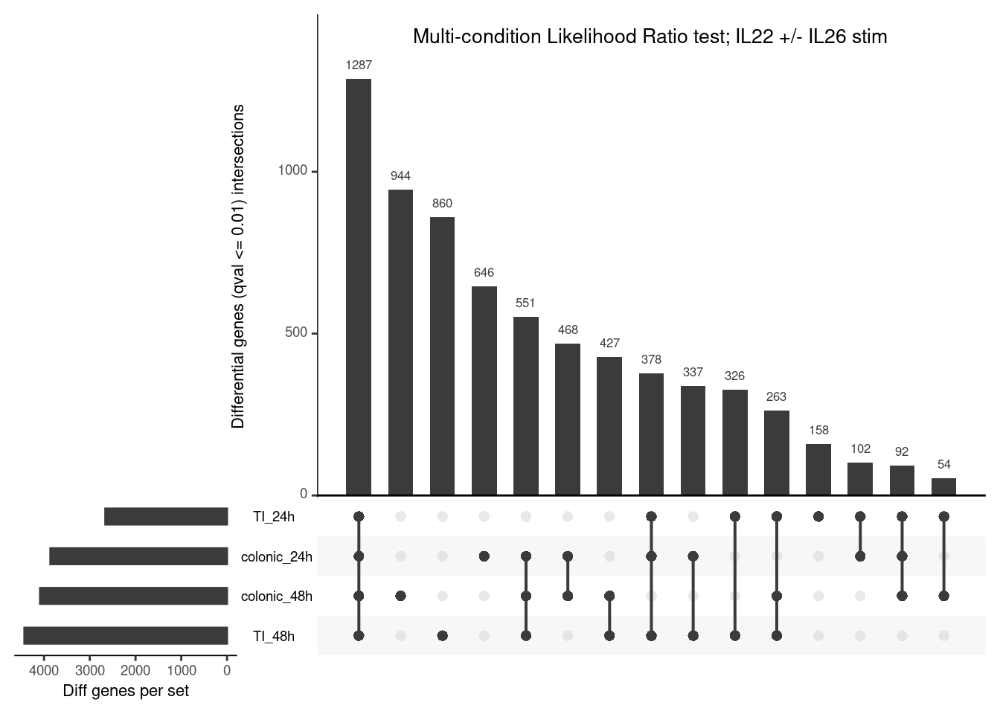
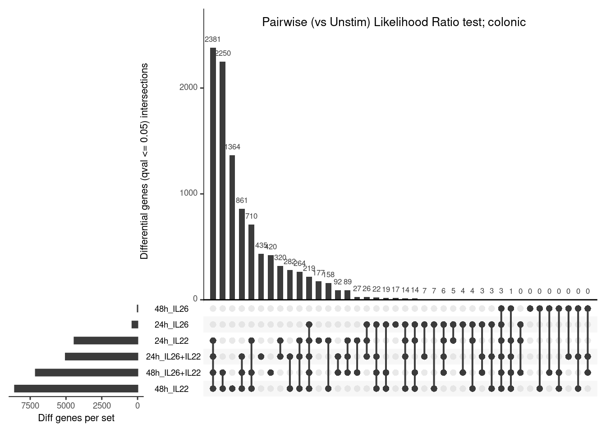
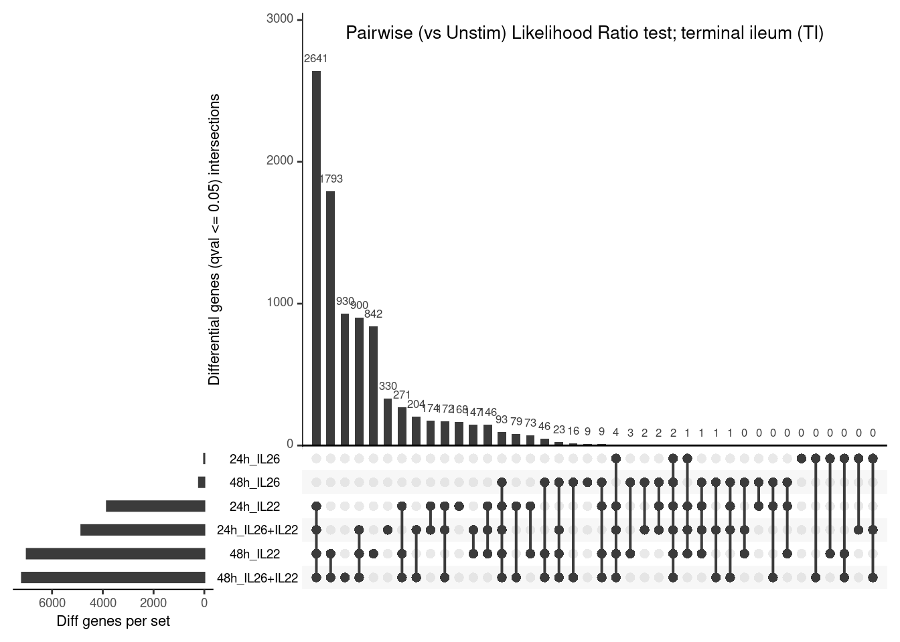

<!DOCTYPE html>
<html xmlns="http://www.w3.org/1999/xhtml" lang="en" xml:lang="en"><head>

<meta charset="utf-8">
<meta name="generator" content="quarto-1.9.31">

<meta name="viewport" content="width=device-width, initial-scale=1.0, user-scalable=yes">


<title>7. Differential expression - continued</title>
<style>
/* Default styles provided by pandoc.
** See https://pandoc.org/MANUAL.html#variables-for-html for config info.
*/
code{white-space: pre-wrap;}
span.smallcaps{font-variant: small-caps;}
div.columns{display: flex; gap: min(4vw, 1.5em);}
div.column{flex: auto; overflow-x: auto;}
div.hanging-indent{margin-left: 1.5em; text-indent: -1.5em;}
ul.task-list{list-style: none;}
ul.task-list li input[type="checkbox"] {
  width: 0.8em;
  margin: 0 0.8em 0.2em -1em; /* quarto-specific, see https://github.com/quarto-dev/quarto-cli/issues/4556 */ 
  vertical-align: middle;
}
/* CSS for syntax highlighting */
html { -webkit-text-size-adjust: 100%; }
pre > code.sourceCode { white-space: pre; position: relative; }
pre > code.sourceCode > span { display: inline-block; line-height: 1.25; }
pre > code.sourceCode > span:empty { height: 1.2em; }
.sourceCode { overflow: visible; }
code.sourceCode > span { color: inherit; text-decoration: inherit; }
div.sourceCode { margin: 1em 0; }
pre.sourceCode { margin: 0; }
@media screen {
div.sourceCode { overflow: auto; }
}
@media print {
pre > code.sourceCode { white-space: pre-wrap; }
pre > code.sourceCode > span { text-indent: -5em; padding-left: 5em; }
}
pre.numberSource code
  { counter-reset: source-line 0; }
pre.numberSource code > span
  { position: relative; left: -4em; counter-increment: source-line; }
pre.numberSource code > span > a:first-child::before
  { content: counter(source-line);
    position: relative; left: -1em; text-align: right; vertical-align: baseline;
    border: none; display: inline-block;
    -webkit-touch-callout: none; -webkit-user-select: none;
    -khtml-user-select: none; -moz-user-select: none;
    -ms-user-select: none; user-select: none;
    padding: 0 4px; width: 4em;
  }
pre.numberSource { margin-left: 3em;  padding-left: 4px; }
div.sourceCode
  {   }
@media screen {
pre > code.sourceCode > span > a:first-child::before { text-decoration: underline; }
}
</style>


<script src="07_diffexp_viz_files/libs/clipboard/clipboard.min.js"></script>
<script src="07_diffexp_viz_files/libs/quarto-html/quarto.js" type="module"></script>
<script src="07_diffexp_viz_files/libs/quarto-html/tabsets/tabsets.js" type="module"></script>
<script src="07_diffexp_viz_files/libs/quarto-html/popper.min.js"></script>
<script src="07_diffexp_viz_files/libs/quarto-html/tippy.umd.min.js"></script>
<script src="07_diffexp_viz_files/libs/quarto-html/anchor.min.js"></script>
<link href="07_diffexp_viz_files/libs/quarto-html/tippy.css" rel="stylesheet">
<link href="07_diffexp_viz_files/libs/quarto-html/quarto-syntax-highlighting-7c69b197886ae2a34062761d21e44731.css" rel="stylesheet" id="quarto-text-highlighting-styles">
<script src="07_diffexp_viz_files/libs/bootstrap/bootstrap.min.js"></script>
<link href="07_diffexp_viz_files/libs/bootstrap/bootstrap-icons.css" rel="stylesheet">
<link href="07_diffexp_viz_files/libs/bootstrap/bootstrap-8bd2ffaa1338207a03e6f5740c61cdb5.min.css" rel="stylesheet" append-hash="true" id="quarto-bootstrap" data-mode="light">


</head>

<body class="fullcontent quarto-light">

<div id="quarto-content" class="page-columns page-rows-contents page-layout-article">

<main class="content" id="quarto-document-content">

<header id="title-block-header" class="quarto-title-block default">
<div class="quarto-title">
<h1 class="title">7. Differential expression - continued</h1>
</div>


<div class="quarto-title-meta">

    
  
    
  </div>
  


</header>


<p>V Chong | vanessa.chong@rdm.ox.ac.uk | 13 January 2026</p>
<section id="preamble" class="level1">
<h1>Preamble</h1>
<ul>
<li>Bulk RNAseq samples from healthy, patient-derived organoids of the colon and terminal ileum (TI).</li>
<li>Libraries were prepared and sequenced in several batches.</li>
<li>Organoids were stimulated with IL22 only, both IL22 and IL26, or IL26 only. Controls were unstimulated.</li>
<li>Stimulation was performed for 24 or 48 hours.</li>
</ul>
<section id="points-of-note" class="level2">
<h2 class="anchored" data-anchor-id="points-of-note">Points-of-note</h2>
<ul>
<li>Samples are spread across three batches, with two technical replicates (<code>_T1</code> and <code>_T2</code>) per donor i.e.&nbsp;same RNA, sampled twice to make libraries for sequencing.</li>
</ul>
<p>These are all reflected in the sample metadata called into the analysis later.</p>
</section>
</section>
<section id="analysis" class="level1">
<h1>Analysis</h1>
<ul>
<li>Previous multi-condition and pairwise differential expression between each IL stimulation vs control.</li>
</ul>
<section id="initialise-r-environment" class="level2">
<h2 class="anchored" data-anchor-id="initialise-r-environment">Initialise R environment</h2>
<div class="cell">
<div class="code-copy-outer-scaffold"><div class="sourceCode cell-code" id="cb1"><pre class="sourceCode r code-with-copy"><code class="sourceCode r"><span id="cb1-1"><a href="#cb1-1" aria-hidden="true" tabindex="-1"></a><span class="do">##### Set libPaths #####</span></span>
<span id="cb1-2"><a href="#cb1-2" aria-hidden="true" tabindex="-1"></a><span class="fu">.libPaths</span>(<span class="fu">c</span>(<span class="st">"/home/chongmorrison/R/x86_64-pc-linux-gnu-library/4.5"</span>,</span>
<span id="cb1-3"><a href="#cb1-3" aria-hidden="true" tabindex="-1"></a>            <span class="st">"/home/chongmorrison/R/4.5.0-Bioc3.21"</span>))</span>
<span id="cb1-4"><a href="#cb1-4" aria-hidden="true" tabindex="-1"></a><span class="fu">.libPaths</span>() <span class="co"># check .libPaths</span></span></code></pre></div><button title="Copy to Clipboard" class="code-copy-button"><i class="bi"></i></button></div>
<div class="cell-output cell-output-stdout">
<pre><code>[1] "/home/chongmorrison/R/x86_64-pc-linux-gnu-library/4.5"
[2] "/home/chongmorrison/R/4.5.0-Bioc3.21"                 
[3] "/usr/local/lib/R/site-library"                        
[4] "/usr/lib/R/site-library"                              
[5] "/usr/lib/R/library"                                   </code></pre>
</div>
<div class="code-copy-outer-scaffold"><div class="sourceCode cell-code" id="cb3"><pre class="sourceCode r code-with-copy"><code class="sourceCode r"><span id="cb3-1"><a href="#cb3-1" aria-hidden="true" tabindex="-1"></a><span class="do">##### Memory/parallel cores usage #####</span></span>
<span id="cb3-2"><a href="#cb3-2" aria-hidden="true" tabindex="-1"></a><span class="fu">options</span>(<span class="at">Ncpus =</span> <span class="dv">12</span>) <span class="co"># adjust no. of cores for base R</span></span>
<span id="cb3-3"><a href="#cb3-3" aria-hidden="true" tabindex="-1"></a><span class="fu">getOption</span>(<span class="st">"Ncpus"</span>, <span class="dv">1</span>L)</span></code></pre></div><button title="Copy to Clipboard" class="code-copy-button"><i class="bi"></i></button></div>
<div class="cell-output cell-output-stdout">
<pre><code>[1] 12</code></pre>
</div>
<div class="code-copy-outer-scaffold"><div class="sourceCode cell-code" id="cb5"><pre class="sourceCode r code-with-copy"><code class="sourceCode r"><span id="cb5-1"><a href="#cb5-1" aria-hidden="true" tabindex="-1"></a><span class="do">##### Import all required packages #####</span></span>
<span id="cb5-2"><a href="#cb5-2" aria-hidden="true" tabindex="-1"></a><span class="co"># data-wrangling and plots</span></span>
<span id="cb5-3"><a href="#cb5-3" aria-hidden="true" tabindex="-1"></a><span class="fu">library</span>(tidyverse)</span>
<span id="cb5-4"><a href="#cb5-4" aria-hidden="true" tabindex="-1"></a><span class="fu">library</span>(RColorBrewer)</span>
<span id="cb5-5"><a href="#cb5-5" aria-hidden="true" tabindex="-1"></a><span class="fu">library</span>(viridis)</span>
<span id="cb5-6"><a href="#cb5-6" aria-hidden="true" tabindex="-1"></a><span class="fu">library</span>(ggpubr)</span>
<span id="cb5-7"><a href="#cb5-7" aria-hidden="true" tabindex="-1"></a><span class="co">#library(SummarizedExperiment)</span></span>
<span id="cb5-8"><a href="#cb5-8" aria-hidden="true" tabindex="-1"></a><span class="fu">library</span>(dittoSeq)</span>
<span id="cb5-9"><a href="#cb5-9" aria-hidden="true" tabindex="-1"></a><span class="fu">library</span>(UpSetR)</span>
<span id="cb5-10"><a href="#cb5-10" aria-hidden="true" tabindex="-1"></a><span class="fu">library</span>(grid) <span class="co"># to add title to UpSetR plots</span></span>
<span id="cb5-11"><a href="#cb5-11" aria-hidden="true" tabindex="-1"></a><span class="co"># analysis</span></span>
<span id="cb5-12"><a href="#cb5-12" aria-hidden="true" tabindex="-1"></a><span class="fu">library</span>(sleuth)</span>
<span id="cb5-13"><a href="#cb5-13" aria-hidden="true" tabindex="-1"></a><span class="fu">library</span>(clusterProfiler)</span>
<span id="cb5-14"><a href="#cb5-14" aria-hidden="true" tabindex="-1"></a><span class="fu">library</span>(enrichplot)</span>
<span id="cb5-15"><a href="#cb5-15" aria-hidden="true" tabindex="-1"></a><span class="fu">library</span>(rbioapi)</span>
<span id="cb5-16"><a href="#cb5-16" aria-hidden="true" tabindex="-1"></a><span class="co"># to cite packages</span></span>
<span id="cb5-17"><a href="#cb5-17" aria-hidden="true" tabindex="-1"></a><span class="fu">library</span>(grateful)</span>
<span id="cb5-18"><a href="#cb5-18" aria-hidden="true" tabindex="-1"></a></span>
<span id="cb5-19"><a href="#cb5-19" aria-hidden="true" tabindex="-1"></a><span class="do">##### Set seed for reproducibility of random sampling #####</span></span>
<span id="cb5-20"><a href="#cb5-20" aria-hidden="true" tabindex="-1"></a><span class="fu">set.seed</span>(<span class="dv">584</span>)</span></code></pre></div><button title="Copy to Clipboard" class="code-copy-button"><i class="bi"></i></button></div>
</div>
</section>
<section id="import-differential-expression-gene-lists---multi-condition" class="level2">
<h2 class="anchored" data-anchor-id="import-differential-expression-gene-lists---multi-condition">Import differential expression gene lists - multi-condition</h2>
<ul>
<li><code>sleuth_lrt</code> Likelihood Ratio test, accounting for <code>donor</code> differences</li>
<li><code>sleuth_results</code> with <code>pval_aggregate = TRUE</code> to extract gene-level results</li>
<li><code>qval &lt;= 0.01</code> filter for differentially-expressed genes</li>
</ul>
<p><strong>24 hours stim - Healthy donors</strong></p>
<div class="cell">
<div class="code-copy-outer-scaffold"><div class="sourceCode cell-code" id="cb6"><pre class="sourceCode r code-with-copy"><code class="sourceCode r"><span id="cb6-1"><a href="#cb6-1" aria-hidden="true" tabindex="-1"></a>CO<span class="fl">.24</span> <span class="ot">&lt;-</span> <span class="fu">read.csv</span>(<span class="at">file =</span> <span class="st">"./outputs/05_diffexp_sleuth-genes-qval001-stim-colonic-24h.csv"</span>, <span class="at">header =</span> <span class="cn">TRUE</span>)</span>
<span id="cb6-2"><a href="#cb6-2" aria-hidden="true" tabindex="-1"></a>TI<span class="fl">.24</span> <span class="ot">&lt;-</span> <span class="fu">read.csv</span>(<span class="at">file =</span> <span class="st">"./outputs/05_diffexp_sleuth-genes-qval001-stim-TI-24h.csv"</span>, <span class="at">header =</span> <span class="cn">TRUE</span>)</span></code></pre></div><button title="Copy to Clipboard" class="code-copy-button"><i class="bi"></i></button></div>
</div>
<p><strong>48 hours stim - Healthy donors</strong></p>
<div class="cell">
<div class="code-copy-outer-scaffold"><div class="sourceCode cell-code" id="cb7"><pre class="sourceCode r code-with-copy"><code class="sourceCode r"><span id="cb7-1"><a href="#cb7-1" aria-hidden="true" tabindex="-1"></a>CO<span class="fl">.48</span> <span class="ot">&lt;-</span> <span class="fu">read.csv</span>(<span class="at">file =</span> <span class="st">"./outputs/05_diffexp_sleuth-genes-qval001-stim-colonic-48h.csv"</span>, <span class="at">header =</span> <span class="cn">TRUE</span>)</span>
<span id="cb7-2"><a href="#cb7-2" aria-hidden="true" tabindex="-1"></a>TI<span class="fl">.48</span> <span class="ot">&lt;-</span> <span class="fu">read.csv</span>(<span class="at">file =</span> <span class="st">"./outputs/05_diffexp_sleuth-genes-qval001-stim-TI-48h.csv"</span>, <span class="at">header =</span> <span class="cn">TRUE</span>)</span></code></pre></div><button title="Copy to Clipboard" class="code-copy-button"><i class="bi"></i></button></div>
</div>
<p>Compile all genes into one data.frame.</p>
<div class="cell">
<div class="code-copy-outer-scaffold"><div class="sourceCode cell-code" id="cb8"><pre class="sourceCode r code-with-copy"><code class="sourceCode r"><span id="cb8-1"><a href="#cb8-1" aria-hidden="true" tabindex="-1"></a><span class="co"># n.b. some target_id (ensembl gene ID) do not have ext_gene symbols - remove using filter()</span></span>
<span id="cb8-2"><a href="#cb8-2" aria-hidden="true" tabindex="-1"></a><span class="do">## n.b. some duplicate ext_genes - remove using unique()</span></span>
<span id="cb8-3"><a href="#cb8-3" aria-hidden="true" tabindex="-1"></a>colonic_24 <span class="ot">&lt;-</span> <span class="fu">unique</span>(<span class="fu">data.frame</span>(CO<span class="fl">.24</span><span class="sc">$</span>ext_gene)) <span class="sc">%&gt;%</span> <span class="fu">filter</span>(<span class="sc">!</span>CO.<span class="fl">24.</span>ext_gene <span class="sc">==</span> <span class="st">""</span>) <span class="sc">%&gt;%</span> <span class="fu">mutate</span>(<span class="at">sample_time =</span> <span class="st">"colonic_24h"</span>)</span>
<span id="cb8-4"><a href="#cb8-4" aria-hidden="true" tabindex="-1"></a>TI_24 <span class="ot">&lt;-</span> <span class="fu">unique</span>(<span class="fu">data.frame</span>(TI<span class="fl">.24</span><span class="sc">$</span>ext_gene)) <span class="sc">%&gt;%</span> <span class="fu">filter</span>(<span class="sc">!</span>TI.<span class="fl">24.</span>ext_gene <span class="sc">==</span> <span class="st">""</span>) <span class="sc">%&gt;%</span> <span class="fu">mutate</span>(<span class="at">sample_time =</span> <span class="st">"TI_24h"</span>)</span>
<span id="cb8-5"><a href="#cb8-5" aria-hidden="true" tabindex="-1"></a>colonic_48 <span class="ot">&lt;-</span> <span class="fu">unique</span>(<span class="fu">data.frame</span>(CO<span class="fl">.48</span><span class="sc">$</span>ext_gene)) <span class="sc">%&gt;%</span> <span class="fu">filter</span>(<span class="sc">!</span>CO.<span class="fl">48.</span>ext_gene <span class="sc">==</span> <span class="st">""</span>) <span class="sc">%&gt;%</span> <span class="fu">mutate</span>(<span class="at">sample_time =</span> <span class="st">"colonic_48h"</span>)</span>
<span id="cb8-6"><a href="#cb8-6" aria-hidden="true" tabindex="-1"></a>TI_48 <span class="ot">&lt;-</span> <span class="fu">unique</span>(<span class="fu">data.frame</span>(TI<span class="fl">.48</span><span class="sc">$</span>ext_gene)) <span class="sc">%&gt;%</span> <span class="fu">filter</span>(<span class="sc">!</span>TI.<span class="fl">48.</span>ext_gene <span class="sc">==</span> <span class="st">""</span>) <span class="sc">%&gt;%</span> <span class="fu">mutate</span>(<span class="at">sample_time =</span> <span class="st">"TI_48h"</span>)</span>
<span id="cb8-7"><a href="#cb8-7" aria-hidden="true" tabindex="-1"></a></span>
<span id="cb8-8"><a href="#cb8-8" aria-hidden="true" tabindex="-1"></a><span class="fu">colnames</span>(colonic_24) <span class="ot">&lt;-</span> <span class="fu">c</span>(<span class="st">"ext_gene"</span>, <span class="st">"sample_time"</span>)</span>
<span id="cb8-9"><a href="#cb8-9" aria-hidden="true" tabindex="-1"></a><span class="fu">colnames</span>(TI_24) <span class="ot">&lt;-</span> <span class="fu">c</span>(<span class="st">"ext_gene"</span>, <span class="st">"sample_time"</span>)</span>
<span id="cb8-10"><a href="#cb8-10" aria-hidden="true" tabindex="-1"></a><span class="fu">colnames</span>(colonic_48) <span class="ot">&lt;-</span> <span class="fu">c</span>(<span class="st">"ext_gene"</span>, <span class="st">"sample_time"</span>)</span>
<span id="cb8-11"><a href="#cb8-11" aria-hidden="true" tabindex="-1"></a><span class="fu">colnames</span>(TI_48) <span class="ot">&lt;-</span> <span class="fu">c</span>(<span class="st">"ext_gene"</span>, <span class="st">"sample_time"</span>)</span>
<span id="cb8-12"><a href="#cb8-12" aria-hidden="true" tabindex="-1"></a></span>
<span id="cb8-13"><a href="#cb8-13" aria-hidden="true" tabindex="-1"></a>all.genes <span class="ot">&lt;-</span> <span class="fu">rbind</span>(colonic_24, TI_24, colonic_48, TI_48)</span></code></pre></div><button title="Copy to Clipboard" class="code-copy-button"><i class="bi"></i></button></div>
</div>
<p><a href="https://github.com/hms-dbmi/UpSetR">UpSet</a> plots are an excellent alternative to Venn diagrams for visualising intersection between the four gene lists above.</p>
<div class="cell">
<div class="code-copy-outer-scaffold"><div class="sourceCode cell-code" id="cb9"><pre class="sourceCode r code-with-copy"><code class="sourceCode r"><span id="cb9-1"><a href="#cb9-1" aria-hidden="true" tabindex="-1"></a><span class="co"># Format data to serve as input for UpSetR.</span></span>
<span id="cb9-2"><a href="#cb9-2" aria-hidden="true" tabindex="-1"></a>input<span class="fl">.1</span> <span class="ot">&lt;-</span> all.genes <span class="sc">%&gt;%</span> <span class="fu">mutate</span>(<span class="at">truval=</span><span class="cn">TRUE</span>) <span class="sc">%&gt;%</span> <span class="fu">spread</span>(sample_time, truval, <span class="at">fill=</span><span class="cn">FALSE</span>)</span>
<span id="cb9-3"><a href="#cb9-3" aria-hidden="true" tabindex="-1"></a>input<span class="fl">.1</span> <span class="ot">&lt;-</span> input<span class="fl">.1</span> <span class="sc">%&gt;%</span></span>
<span id="cb9-4"><a href="#cb9-4" aria-hidden="true" tabindex="-1"></a>  <span class="fu">mutate</span>(<span class="fu">across</span>(<span class="dv">2</span><span class="sc">:</span><span class="dv">5</span>, <span class="sc">~</span> <span class="fu">as.integer</span>(<span class="fu">as.character</span>(<span class="fu">factor</span>(., <span class="at">levels =</span> <span class="fu">c</span>(<span class="st">"TRUE"</span>, <span class="st">"FALSE"</span>), <span class="at">labels =</span> <span class="fu">c</span>(<span class="dv">1</span>, <span class="dv">0</span>))))))</span>
<span id="cb9-5"><a href="#cb9-5" aria-hidden="true" tabindex="-1"></a></span>
<span id="cb9-6"><a href="#cb9-6" aria-hidden="true" tabindex="-1"></a><span class="co"># UpSetR plot - Conway et al. 2017</span></span>
<span id="cb9-7"><a href="#cb9-7" aria-hidden="true" tabindex="-1"></a><span class="fu">upset</span>(input<span class="fl">.1</span>, <span class="at">empty.intersections =</span> <span class="st">"on"</span>, <span class="at">order.by =</span> <span class="st">"freq"</span>, <span class="at">mainbar.y.label =</span> <span class="st">"Differential genes (qval &lt;= 0.01) intersections"</span>, <span class="at">sets.x.label =</span> <span class="st">"Diff genes per set"</span>)</span></code></pre></div><button title="Copy to Clipboard" class="code-copy-button"><i class="bi"></i></button></div>
<div class="cell-output cell-output-stderr">
<pre><code>Warning: `aes_string()` was deprecated in ggplot2 3.0.0.
ℹ Please use tidy evaluation idioms with `aes()`.
ℹ See also `vignette("ggplot2-in-packages")` for more information.
ℹ The deprecated feature was likely used in the UpSetR package.
  Please report the issue to the authors.</code></pre>
</div>
<div class="cell-output cell-output-stderr">
<pre><code>Warning: Using `size` aesthetic for lines was deprecated in ggplot2 3.4.0.
ℹ Please use `linewidth` instead.
ℹ The deprecated feature was likely used in the UpSetR package.
  Please report the issue to the authors.</code></pre>
</div>
<div class="cell-output cell-output-stderr">
<pre><code>Warning: The `size` argument of `element_line()` is deprecated as of ggplot2 3.4.0.
ℹ Please use the `linewidth` argument instead.
ℹ The deprecated feature was likely used in the UpSetR package.
  Please report the issue to the authors.</code></pre>
</div>
<div class="code-copy-outer-scaffold"><div class="sourceCode cell-code" id="cb13"><pre class="sourceCode r code-with-copy"><code class="sourceCode r"><span id="cb13-1"><a href="#cb13-1" aria-hidden="true" tabindex="-1"></a><span class="fu">grid.text</span>(<span class="st">"Multi-condition Likelihood Ratio test; IL22 +/- IL26 stim"</span>, <span class="at">x =</span> <span class="fl">0.65</span>, <span class="at">y =</span> <span class="fl">0.95</span>, <span class="at">gp =</span> <span class="fu">gpar</span>(<span class="at">fontsize=</span><span class="dv">10</span>))</span></code></pre></div><button title="Copy to Clipboard" class="code-copy-button"><i class="bi"></i></button></div>
<div class="cell-output-display">
<div>
<figure class="figure">
<p></p>
</figure>
</div>
</div>
</div>
</section>
<section id="import-differential-expression-gene-lists---pairwise" class="level2">
<h2 class="anchored" data-anchor-id="import-differential-expression-gene-lists---pairwise">Import differential expression gene lists - pairwise</h2>
<p>To get as “clean” results as possible for downstream analyses, the same parameters were employed for all differential expression:</p>
<ul>
<li><code>sleuth_lrt</code> Likelihood Ratio test, accounting for <code>donor</code> differences</li>
<li><code>sleuth_results</code> with <code>pval_aggregate = FALSE</code> to extract transcript-level results</li>
<li><code>qval &lt;= 0.05</code> filter for differentially-expressed transcripts</li>
</ul>
<p><strong>Colonic</strong></p>
<div class="cell">
<div class="code-copy-outer-scaffold"><div class="sourceCode cell-code" id="cb14"><pre class="sourceCode r code-with-copy"><code class="sourceCode r"><span id="cb14-1"><a href="#cb14-1" aria-hidden="true" tabindex="-1"></a><span class="co"># IL22 only vs control - 24h</span></span>
<span id="cb14-2"><a href="#cb14-2" aria-hidden="true" tabindex="-1"></a>CO.<span class="fl">24.</span>il22 <span class="ot">&lt;-</span> <span class="fu">read.csv</span>(<span class="at">file =</span> <span class="st">"./outputs/05_diffexp_sleuth-genes-qval005_IL22-ctl_colonic-24h.csv"</span>, <span class="at">header =</span> <span class="cn">TRUE</span>)</span>
<span id="cb14-3"><a href="#cb14-3" aria-hidden="true" tabindex="-1"></a><span class="co"># IL22+26 vs control - 24h</span></span>
<span id="cb14-4"><a href="#cb14-4" aria-hidden="true" tabindex="-1"></a>CO.<span class="fl">24.</span>il26<span class="fl">.22</span> <span class="ot">&lt;-</span> <span class="fu">read.csv</span>(<span class="at">file =</span> <span class="st">"./outputs/05_diffexp_sleuth-genes-qval005_IL22+26-ctl_colonic-24h.csv"</span>, <span class="at">header =</span> <span class="cn">TRUE</span>)</span>
<span id="cb14-5"><a href="#cb14-5" aria-hidden="true" tabindex="-1"></a><span class="co"># IL26 only vs control - 24h</span></span>
<span id="cb14-6"><a href="#cb14-6" aria-hidden="true" tabindex="-1"></a>CO.<span class="fl">24.</span>il26 <span class="ot">&lt;-</span> <span class="fu">read.csv</span>(<span class="at">file =</span> <span class="st">"./outputs/05_diffexp_sleuth-genes-qval005_IL26-ctl_colonic-24h.csv"</span>, <span class="at">header =</span> <span class="cn">TRUE</span>)</span>
<span id="cb14-7"><a href="#cb14-7" aria-hidden="true" tabindex="-1"></a></span>
<span id="cb14-8"><a href="#cb14-8" aria-hidden="true" tabindex="-1"></a><span class="co"># IL22 only vs control - 48h</span></span>
<span id="cb14-9"><a href="#cb14-9" aria-hidden="true" tabindex="-1"></a>CO.<span class="fl">48.</span>il22 <span class="ot">&lt;-</span> <span class="fu">read.csv</span>(<span class="at">file =</span> <span class="st">"./outputs/05_diffexp_sleuth-genes-qval005_IL22-ctl_colonic-48h.csv"</span>, <span class="at">header =</span> <span class="cn">TRUE</span>)</span>
<span id="cb14-10"><a href="#cb14-10" aria-hidden="true" tabindex="-1"></a><span class="co"># IL22+26 vs control - 48h</span></span>
<span id="cb14-11"><a href="#cb14-11" aria-hidden="true" tabindex="-1"></a>CO.<span class="fl">48.</span>il26<span class="fl">.22</span> <span class="ot">&lt;-</span> <span class="fu">read.csv</span>(<span class="at">file =</span> <span class="st">"./outputs/05_diffexp_sleuth-genes-qval005_IL22+26-ctl_colonic-48h.csv"</span>, <span class="at">header =</span> <span class="cn">TRUE</span>)</span>
<span id="cb14-12"><a href="#cb14-12" aria-hidden="true" tabindex="-1"></a><span class="co"># IL26 only vs control - 48h</span></span>
<span id="cb14-13"><a href="#cb14-13" aria-hidden="true" tabindex="-1"></a>CO.<span class="fl">48.</span>il26 <span class="ot">&lt;-</span> <span class="fu">read.csv</span>(<span class="at">file =</span> <span class="st">"./outputs/05_diffexp_sleuth-genes-qval005_IL26-ctl_colonic-48h.csv"</span>, <span class="at">header =</span> <span class="cn">TRUE</span>)</span></code></pre></div><button title="Copy to Clipboard" class="code-copy-button"><i class="bi"></i></button></div>
</div>
<p><strong>TI</strong></p>
<div class="cell">
<div class="code-copy-outer-scaffold"><div class="sourceCode cell-code" id="cb15"><pre class="sourceCode r code-with-copy"><code class="sourceCode r"><span id="cb15-1"><a href="#cb15-1" aria-hidden="true" tabindex="-1"></a><span class="co"># IL22 only vs control - 24h</span></span>
<span id="cb15-2"><a href="#cb15-2" aria-hidden="true" tabindex="-1"></a>TI.<span class="fl">24.</span>il22 <span class="ot">&lt;-</span> <span class="fu">read.csv</span>(<span class="at">file =</span> <span class="st">"./outputs/05_diffexp_sleuth-genes-qval005_IL22-ctl_TI-24h.csv"</span>, <span class="at">header =</span> <span class="cn">TRUE</span>)</span>
<span id="cb15-3"><a href="#cb15-3" aria-hidden="true" tabindex="-1"></a><span class="co"># IL22+26 vs control - 24h</span></span>
<span id="cb15-4"><a href="#cb15-4" aria-hidden="true" tabindex="-1"></a>TI.<span class="fl">24.</span>il26<span class="fl">.22</span> <span class="ot">&lt;-</span> <span class="fu">read.csv</span>(<span class="at">file =</span> <span class="st">"./outputs/05_diffexp_sleuth-genes-qval005_IL22+26-ctl_TI-24h.csv"</span>, <span class="at">header =</span> <span class="cn">TRUE</span>)</span>
<span id="cb15-5"><a href="#cb15-5" aria-hidden="true" tabindex="-1"></a><span class="co"># IL26 only vs control - 24h</span></span>
<span id="cb15-6"><a href="#cb15-6" aria-hidden="true" tabindex="-1"></a>TI.<span class="fl">24.</span>il26 <span class="ot">&lt;-</span> <span class="fu">read.csv</span>(<span class="at">file =</span> <span class="st">"./outputs/05_diffexp_sleuth-genes-qval005_IL26-ctl_TI-24h.csv"</span>, <span class="at">header =</span> <span class="cn">TRUE</span>)</span>
<span id="cb15-7"><a href="#cb15-7" aria-hidden="true" tabindex="-1"></a></span>
<span id="cb15-8"><a href="#cb15-8" aria-hidden="true" tabindex="-1"></a><span class="co"># IL22 only vs control - 48h</span></span>
<span id="cb15-9"><a href="#cb15-9" aria-hidden="true" tabindex="-1"></a>TI.<span class="fl">48.</span>il22 <span class="ot">&lt;-</span> <span class="fu">read.csv</span>(<span class="at">file =</span> <span class="st">"./outputs/05_diffexp_sleuth-genes-qval005_IL22-ctl_TI-48h.csv"</span>, <span class="at">header =</span> <span class="cn">TRUE</span>)</span>
<span id="cb15-10"><a href="#cb15-10" aria-hidden="true" tabindex="-1"></a><span class="co"># IL22+26 vs control - 48h</span></span>
<span id="cb15-11"><a href="#cb15-11" aria-hidden="true" tabindex="-1"></a>TI.<span class="fl">48.</span>il26<span class="fl">.22</span> <span class="ot">&lt;-</span> <span class="fu">read.csv</span>(<span class="at">file =</span> <span class="st">"./outputs/05_diffexp_sleuth-genes-qval005_IL22+26-ctl_TI-48h.csv"</span>, <span class="at">header =</span> <span class="cn">TRUE</span>)</span>
<span id="cb15-12"><a href="#cb15-12" aria-hidden="true" tabindex="-1"></a><span class="co"># IL26 only vs control - 48h</span></span>
<span id="cb15-13"><a href="#cb15-13" aria-hidden="true" tabindex="-1"></a>TI.<span class="fl">48.</span>il26 <span class="ot">&lt;-</span> <span class="fu">read.csv</span>(<span class="at">file =</span> <span class="st">"./outputs/05_diffexp_sleuth-genes-qval005_IL26-ctl_TI-48h.csv"</span>, <span class="at">header =</span> <span class="cn">TRUE</span>)</span></code></pre></div><button title="Copy to Clipboard" class="code-copy-button"><i class="bi"></i></button></div>
</div>
<p>Compile all genes into one data.frame.</p>
<p><strong>Colonic</strong></p>
<div class="cell">
<div class="code-copy-outer-scaffold"><div class="sourceCode cell-code" id="cb16"><pre class="sourceCode r code-with-copy"><code class="sourceCode r"><span id="cb16-1"><a href="#cb16-1" aria-hidden="true" tabindex="-1"></a><span class="co"># n.b. some target_id (ensembl gene ID) do not have ext_gene symbols - remove using filter()</span></span>
<span id="cb16-2"><a href="#cb16-2" aria-hidden="true" tabindex="-1"></a><span class="do">## n.b. some duplicate ext_genes - remove using unique()</span></span>
<span id="cb16-3"><a href="#cb16-3" aria-hidden="true" tabindex="-1"></a>a <span class="ot">&lt;-</span> <span class="fu">unique</span>(<span class="fu">data.frame</span>(CO.<span class="fl">24.</span>il22<span class="sc">$</span>ext_gene)) <span class="sc">%&gt;%</span> <span class="fu">filter</span>(<span class="sc">!</span>CO.<span class="fl">24.</span>il22.ext_gene <span class="sc">==</span> <span class="st">""</span>) <span class="sc">%&gt;%</span> <span class="fu">mutate</span>(<span class="at">time_stim =</span> <span class="st">"24h_IL22"</span>)</span>
<span id="cb16-4"><a href="#cb16-4" aria-hidden="true" tabindex="-1"></a>b <span class="ot">&lt;-</span> <span class="fu">unique</span>(<span class="fu">data.frame</span>(CO.<span class="fl">24.</span>il26<span class="fl">.22</span><span class="sc">$</span>ext_gene)) <span class="sc">%&gt;%</span> <span class="fu">filter</span>(<span class="sc">!</span>CO.<span class="fl">24.</span>il26.<span class="fl">22.</span>ext_gene <span class="sc">==</span> <span class="st">""</span>) <span class="sc">%&gt;%</span> <span class="fu">mutate</span>(<span class="at">time_stim =</span> <span class="st">"24h_IL26+IL22"</span>)</span>
<span id="cb16-5"><a href="#cb16-5" aria-hidden="true" tabindex="-1"></a>c <span class="ot">&lt;-</span> <span class="fu">unique</span>(<span class="fu">data.frame</span>(CO.<span class="fl">24.</span>il26<span class="sc">$</span>ext_gene)) <span class="sc">%&gt;%</span> <span class="fu">filter</span>(<span class="sc">!</span>CO.<span class="fl">24.</span>il26.ext_gene <span class="sc">==</span> <span class="st">""</span>) <span class="sc">%&gt;%</span> <span class="fu">mutate</span>(<span class="at">time_stim =</span> <span class="st">"24h_IL26"</span>)</span>
<span id="cb16-6"><a href="#cb16-6" aria-hidden="true" tabindex="-1"></a>d <span class="ot">&lt;-</span> <span class="fu">unique</span>(<span class="fu">data.frame</span>(CO.<span class="fl">48.</span>il22<span class="sc">$</span>ext_gene)) <span class="sc">%&gt;%</span> <span class="fu">filter</span>(<span class="sc">!</span>CO.<span class="fl">48.</span>il22.ext_gene <span class="sc">==</span> <span class="st">""</span>) <span class="sc">%&gt;%</span> <span class="fu">mutate</span>(<span class="at">time_stim =</span> <span class="st">"48h_IL22"</span>)</span>
<span id="cb16-7"><a href="#cb16-7" aria-hidden="true" tabindex="-1"></a>e <span class="ot">&lt;-</span> <span class="fu">unique</span>(<span class="fu">data.frame</span>(CO.<span class="fl">48.</span>il26<span class="fl">.22</span><span class="sc">$</span>ext_gene)) <span class="sc">%&gt;%</span> <span class="fu">filter</span>(<span class="sc">!</span>CO.<span class="fl">48.</span>il26.<span class="fl">22.</span>ext_gene <span class="sc">==</span> <span class="st">""</span>) <span class="sc">%&gt;%</span> <span class="fu">mutate</span>(<span class="at">time_stim =</span> <span class="st">"48h_IL26+IL22"</span>)</span>
<span id="cb16-8"><a href="#cb16-8" aria-hidden="true" tabindex="-1"></a>f <span class="ot">&lt;-</span> <span class="fu">unique</span>(<span class="fu">data.frame</span>(CO.<span class="fl">48.</span>il26<span class="sc">$</span>ext_gene)) <span class="sc">%&gt;%</span> <span class="fu">filter</span>(<span class="sc">!</span>CO.<span class="fl">48.</span>il26.ext_gene <span class="sc">==</span> <span class="st">""</span>) <span class="sc">%&gt;%</span> <span class="fu">mutate</span>(<span class="at">time_stim =</span> <span class="st">"48h_IL26"</span>)</span>
<span id="cb16-9"><a href="#cb16-9" aria-hidden="true" tabindex="-1"></a></span>
<span id="cb16-10"><a href="#cb16-10" aria-hidden="true" tabindex="-1"></a><span class="fu">colnames</span>(a) <span class="ot">&lt;-</span> <span class="fu">c</span>(<span class="st">"ext_gene"</span>, <span class="st">"time_stim"</span>)</span>
<span id="cb16-11"><a href="#cb16-11" aria-hidden="true" tabindex="-1"></a><span class="fu">colnames</span>(b) <span class="ot">&lt;-</span> <span class="fu">c</span>(<span class="st">"ext_gene"</span>, <span class="st">"time_stim"</span>)</span>
<span id="cb16-12"><a href="#cb16-12" aria-hidden="true" tabindex="-1"></a><span class="fu">colnames</span>(c) <span class="ot">&lt;-</span> <span class="fu">c</span>(<span class="st">"ext_gene"</span>, <span class="st">"time_stim"</span>)</span>
<span id="cb16-13"><a href="#cb16-13" aria-hidden="true" tabindex="-1"></a><span class="fu">colnames</span>(d) <span class="ot">&lt;-</span> <span class="fu">c</span>(<span class="st">"ext_gene"</span>, <span class="st">"time_stim"</span>)</span>
<span id="cb16-14"><a href="#cb16-14" aria-hidden="true" tabindex="-1"></a><span class="fu">colnames</span>(e) <span class="ot">&lt;-</span> <span class="fu">c</span>(<span class="st">"ext_gene"</span>, <span class="st">"time_stim"</span>)</span>
<span id="cb16-15"><a href="#cb16-15" aria-hidden="true" tabindex="-1"></a><span class="fu">colnames</span>(f) <span class="ot">&lt;-</span> <span class="fu">c</span>(<span class="st">"ext_gene"</span>, <span class="st">"time_stim"</span>)</span>
<span id="cb16-16"><a href="#cb16-16" aria-hidden="true" tabindex="-1"></a></span>
<span id="cb16-17"><a href="#cb16-17" aria-hidden="true" tabindex="-1"></a>colonic.genes <span class="ot">&lt;-</span> <span class="fu">rbind</span>(a, b, c, d, e, f)</span></code></pre></div><button title="Copy to Clipboard" class="code-copy-button"><i class="bi"></i></button></div>
</div>
<div class="cell">
<div class="code-copy-outer-scaffold"><div class="sourceCode cell-code" id="cb17"><pre class="sourceCode r code-with-copy"><code class="sourceCode r"><span id="cb17-1"><a href="#cb17-1" aria-hidden="true" tabindex="-1"></a><span class="co"># Format data to serve as input for UpSetR.</span></span>
<span id="cb17-2"><a href="#cb17-2" aria-hidden="true" tabindex="-1"></a>input<span class="fl">.2</span> <span class="ot">&lt;-</span> colonic.genes <span class="sc">%&gt;%</span> <span class="fu">mutate</span>(<span class="at">truval=</span><span class="cn">TRUE</span>) <span class="sc">%&gt;%</span> <span class="fu">spread</span>(time_stim, truval, <span class="at">fill=</span><span class="cn">FALSE</span>)</span>
<span id="cb17-3"><a href="#cb17-3" aria-hidden="true" tabindex="-1"></a>input<span class="fl">.2</span> <span class="ot">&lt;-</span> input<span class="fl">.2</span> <span class="sc">%&gt;%</span></span>
<span id="cb17-4"><a href="#cb17-4" aria-hidden="true" tabindex="-1"></a>  <span class="fu">mutate</span>(<span class="fu">across</span>(<span class="dv">2</span><span class="sc">:</span><span class="dv">7</span>, <span class="sc">~</span> <span class="fu">as.integer</span>(<span class="fu">as.character</span>(<span class="fu">factor</span>(., <span class="at">levels =</span> <span class="fu">c</span>(<span class="st">"TRUE"</span>, <span class="st">"FALSE"</span>), <span class="at">labels =</span> <span class="fu">c</span>(<span class="dv">1</span>, <span class="dv">0</span>))))))</span>
<span id="cb17-5"><a href="#cb17-5" aria-hidden="true" tabindex="-1"></a></span>
<span id="cb17-6"><a href="#cb17-6" aria-hidden="true" tabindex="-1"></a><span class="co"># UpSetR plot - Conway et al. 2017</span></span>
<span id="cb17-7"><a href="#cb17-7" aria-hidden="true" tabindex="-1"></a><span class="fu">upset</span>(input<span class="fl">.2</span>, <span class="at">nsets =</span> <span class="dv">6</span>, <span class="at">empty.intersections =</span> <span class="st">"on"</span>, <span class="at">order.by =</span> <span class="st">"freq"</span>, <span class="at">mainbar.y.label =</span> <span class="st">"Differential genes (qval &lt;= 0.05) intersections"</span>, <span class="at">sets.x.label =</span> <span class="st">"Diff genes per set"</span>)</span>
<span id="cb17-8"><a href="#cb17-8" aria-hidden="true" tabindex="-1"></a><span class="fu">grid.text</span>(<span class="st">"Pairwise (vs Unstim) Likelihood Ratio test; colonic"</span>, <span class="at">x =</span> <span class="fl">0.65</span>, <span class="at">y =</span> <span class="fl">0.95</span>, <span class="at">gp =</span> <span class="fu">gpar</span>(<span class="at">fontsize=</span><span class="dv">10</span>))</span></code></pre></div><button title="Copy to Clipboard" class="code-copy-button"><i class="bi"></i></button></div>
<div class="cell-output-display">
<div>
<figure class="figure">
<p></p>
</figure>
</div>
</div>
</div>
<div class="cell">
<div class="code-copy-outer-scaffold"><div class="sourceCode cell-code" id="cb18"><pre class="sourceCode r code-with-copy"><code class="sourceCode r"><span id="cb18-1"><a href="#cb18-1" aria-hidden="true" tabindex="-1"></a><span class="co"># save upset table</span></span>
<span id="cb18-2"><a href="#cb18-2" aria-hidden="true" tabindex="-1"></a><span class="fu">write.csv</span>(input<span class="fl">.2</span>, <span class="at">file =</span> <span class="st">"./outputs/07_upsetplot-intersections_colonic.csv"</span>, <span class="at">quote =</span> <span class="cn">FALSE</span>, <span class="at">row.names =</span> <span class="cn">FALSE</span>)</span></code></pre></div><button title="Copy to Clipboard" class="code-copy-button"><i class="bi"></i></button></div>
</div>
<p><strong>Terminal ileum (TI)</strong></p>
<div class="cell">
<div class="code-copy-outer-scaffold"><div class="sourceCode cell-code" id="cb19"><pre class="sourceCode r code-with-copy"><code class="sourceCode r"><span id="cb19-1"><a href="#cb19-1" aria-hidden="true" tabindex="-1"></a><span class="co"># n.b. some target_id (ensembl gene ID) do not have ext_gene symbols - remove using filter()</span></span>
<span id="cb19-2"><a href="#cb19-2" aria-hidden="true" tabindex="-1"></a><span class="do">## n.b. some duplicate ext_genes - remove using unique()</span></span>
<span id="cb19-3"><a href="#cb19-3" aria-hidden="true" tabindex="-1"></a>a <span class="ot">&lt;-</span> <span class="fu">unique</span>(<span class="fu">data.frame</span>(TI.<span class="fl">24.</span>il22<span class="sc">$</span>ext_gene)) <span class="sc">%&gt;%</span> <span class="fu">filter</span>(<span class="sc">!</span>TI.<span class="fl">24.</span>il22.ext_gene <span class="sc">==</span> <span class="st">""</span>) <span class="sc">%&gt;%</span> <span class="fu">mutate</span>(<span class="at">time_stim =</span> <span class="st">"24h_IL22"</span>)</span>
<span id="cb19-4"><a href="#cb19-4" aria-hidden="true" tabindex="-1"></a>b <span class="ot">&lt;-</span> <span class="fu">unique</span>(<span class="fu">data.frame</span>(TI.<span class="fl">24.</span>il26<span class="fl">.22</span><span class="sc">$</span>ext_gene)) <span class="sc">%&gt;%</span> <span class="fu">filter</span>(<span class="sc">!</span>TI.<span class="fl">24.</span>il26.<span class="fl">22.</span>ext_gene <span class="sc">==</span> <span class="st">""</span>) <span class="sc">%&gt;%</span> <span class="fu">mutate</span>(<span class="at">time_stim =</span> <span class="st">"24h_IL26+IL22"</span>)</span>
<span id="cb19-5"><a href="#cb19-5" aria-hidden="true" tabindex="-1"></a>c <span class="ot">&lt;-</span> <span class="fu">unique</span>(<span class="fu">data.frame</span>(TI.<span class="fl">24.</span>il26<span class="sc">$</span>ext_gene)) <span class="sc">%&gt;%</span> <span class="fu">filter</span>(<span class="sc">!</span>TI.<span class="fl">24.</span>il26.ext_gene <span class="sc">==</span> <span class="st">""</span>) <span class="sc">%&gt;%</span> <span class="fu">mutate</span>(<span class="at">time_stim =</span> <span class="st">"24h_IL26"</span>)</span>
<span id="cb19-6"><a href="#cb19-6" aria-hidden="true" tabindex="-1"></a>d <span class="ot">&lt;-</span> <span class="fu">unique</span>(<span class="fu">data.frame</span>(TI.<span class="fl">48.</span>il22<span class="sc">$</span>ext_gene)) <span class="sc">%&gt;%</span> <span class="fu">filter</span>(<span class="sc">!</span>TI.<span class="fl">48.</span>il22.ext_gene <span class="sc">==</span> <span class="st">""</span>) <span class="sc">%&gt;%</span> <span class="fu">mutate</span>(<span class="at">time_stim =</span> <span class="st">"48h_IL22"</span>)</span>
<span id="cb19-7"><a href="#cb19-7" aria-hidden="true" tabindex="-1"></a>e <span class="ot">&lt;-</span> <span class="fu">unique</span>(<span class="fu">data.frame</span>(TI.<span class="fl">48.</span>il26<span class="fl">.22</span><span class="sc">$</span>ext_gene)) <span class="sc">%&gt;%</span> <span class="fu">filter</span>(<span class="sc">!</span>TI.<span class="fl">48.</span>il26.<span class="fl">22.</span>ext_gene <span class="sc">==</span> <span class="st">""</span>) <span class="sc">%&gt;%</span> <span class="fu">mutate</span>(<span class="at">time_stim =</span> <span class="st">"48h_IL26+IL22"</span>)</span>
<span id="cb19-8"><a href="#cb19-8" aria-hidden="true" tabindex="-1"></a>f <span class="ot">&lt;-</span> <span class="fu">unique</span>(<span class="fu">data.frame</span>(TI.<span class="fl">48.</span>il26<span class="sc">$</span>ext_gene)) <span class="sc">%&gt;%</span> <span class="fu">filter</span>(<span class="sc">!</span>TI.<span class="fl">48.</span>il26.ext_gene <span class="sc">==</span> <span class="st">""</span>) <span class="sc">%&gt;%</span> <span class="fu">mutate</span>(<span class="at">time_stim =</span> <span class="st">"48h_IL26"</span>)</span>
<span id="cb19-9"><a href="#cb19-9" aria-hidden="true" tabindex="-1"></a></span>
<span id="cb19-10"><a href="#cb19-10" aria-hidden="true" tabindex="-1"></a><span class="fu">colnames</span>(a) <span class="ot">&lt;-</span> <span class="fu">c</span>(<span class="st">"ext_gene"</span>, <span class="st">"time_stim"</span>)</span>
<span id="cb19-11"><a href="#cb19-11" aria-hidden="true" tabindex="-1"></a><span class="fu">colnames</span>(b) <span class="ot">&lt;-</span> <span class="fu">c</span>(<span class="st">"ext_gene"</span>, <span class="st">"time_stim"</span>)</span>
<span id="cb19-12"><a href="#cb19-12" aria-hidden="true" tabindex="-1"></a><span class="fu">colnames</span>(c) <span class="ot">&lt;-</span> <span class="fu">c</span>(<span class="st">"ext_gene"</span>, <span class="st">"time_stim"</span>)</span>
<span id="cb19-13"><a href="#cb19-13" aria-hidden="true" tabindex="-1"></a><span class="fu">colnames</span>(d) <span class="ot">&lt;-</span> <span class="fu">c</span>(<span class="st">"ext_gene"</span>, <span class="st">"time_stim"</span>)</span>
<span id="cb19-14"><a href="#cb19-14" aria-hidden="true" tabindex="-1"></a><span class="fu">colnames</span>(e) <span class="ot">&lt;-</span> <span class="fu">c</span>(<span class="st">"ext_gene"</span>, <span class="st">"time_stim"</span>)</span>
<span id="cb19-15"><a href="#cb19-15" aria-hidden="true" tabindex="-1"></a><span class="fu">colnames</span>(f) <span class="ot">&lt;-</span> <span class="fu">c</span>(<span class="st">"ext_gene"</span>, <span class="st">"time_stim"</span>)</span>
<span id="cb19-16"><a href="#cb19-16" aria-hidden="true" tabindex="-1"></a></span>
<span id="cb19-17"><a href="#cb19-17" aria-hidden="true" tabindex="-1"></a>TI.genes <span class="ot">&lt;-</span> <span class="fu">rbind</span>(a, b, c, d, e, f)</span></code></pre></div><button title="Copy to Clipboard" class="code-copy-button"><i class="bi"></i></button></div>
</div>
<div class="cell">
<div class="code-copy-outer-scaffold"><div class="sourceCode cell-code" id="cb20"><pre class="sourceCode r code-with-copy"><code class="sourceCode r"><span id="cb20-1"><a href="#cb20-1" aria-hidden="true" tabindex="-1"></a><span class="co"># Format data to serve as input for UpSetR.</span></span>
<span id="cb20-2"><a href="#cb20-2" aria-hidden="true" tabindex="-1"></a>input<span class="fl">.3</span> <span class="ot">&lt;-</span> TI.genes <span class="sc">%&gt;%</span> <span class="fu">mutate</span>(<span class="at">truval=</span><span class="cn">TRUE</span>) <span class="sc">%&gt;%</span> <span class="fu">spread</span>(time_stim, truval, <span class="at">fill=</span><span class="cn">FALSE</span>)</span>
<span id="cb20-3"><a href="#cb20-3" aria-hidden="true" tabindex="-1"></a>input<span class="fl">.3</span> <span class="ot">&lt;-</span> input<span class="fl">.3</span> <span class="sc">%&gt;%</span></span>
<span id="cb20-4"><a href="#cb20-4" aria-hidden="true" tabindex="-1"></a>  <span class="fu">mutate</span>(<span class="fu">across</span>(<span class="dv">2</span><span class="sc">:</span><span class="dv">7</span>, <span class="sc">~</span> <span class="fu">as.integer</span>(<span class="fu">as.character</span>(<span class="fu">factor</span>(., <span class="at">levels =</span> <span class="fu">c</span>(<span class="st">"TRUE"</span>, <span class="st">"FALSE"</span>), <span class="at">labels =</span> <span class="fu">c</span>(<span class="dv">1</span>, <span class="dv">0</span>))))))</span>
<span id="cb20-5"><a href="#cb20-5" aria-hidden="true" tabindex="-1"></a></span>
<span id="cb20-6"><a href="#cb20-6" aria-hidden="true" tabindex="-1"></a><span class="co"># UpSetR plot - Conway et al. 2017</span></span>
<span id="cb20-7"><a href="#cb20-7" aria-hidden="true" tabindex="-1"></a><span class="fu">upset</span>(input<span class="fl">.3</span>, <span class="at">nsets =</span> <span class="dv">6</span>, <span class="at">empty.intersections =</span> <span class="st">"on"</span>, <span class="at">order.by =</span> <span class="st">"freq"</span>, <span class="at">mainbar.y.label =</span> <span class="st">"Differential genes (qval &lt;= 0.05) intersections"</span>, <span class="at">sets.x.label =</span> <span class="st">"Diff genes per set"</span>)</span>
<span id="cb20-8"><a href="#cb20-8" aria-hidden="true" tabindex="-1"></a><span class="fu">grid.text</span>(<span class="st">"Pairwise (vs Unstim) Likelihood Ratio test; terminal ileum (TI)"</span>, <span class="at">x =</span> <span class="fl">0.65</span>, <span class="at">y =</span> <span class="fl">0.95</span>, <span class="at">gp =</span> <span class="fu">gpar</span>(<span class="at">fontsize=</span><span class="dv">10</span>))</span></code></pre></div><button title="Copy to Clipboard" class="code-copy-button"><i class="bi"></i></button></div>
<div class="cell-output-display">
<div>
<figure class="figure">
<p></p>
</figure>
</div>
</div>
</div>
<div class="cell">
<div class="code-copy-outer-scaffold"><div class="sourceCode cell-code" id="cb21"><pre class="sourceCode r code-with-copy"><code class="sourceCode r"><span id="cb21-1"><a href="#cb21-1" aria-hidden="true" tabindex="-1"></a><span class="co"># save upset table</span></span>
<span id="cb21-2"><a href="#cb21-2" aria-hidden="true" tabindex="-1"></a><span class="fu">write.csv</span>(input<span class="fl">.3</span>, <span class="at">file =</span> <span class="st">"./outputs/07_upsetplot-intersections_TI.csv"</span>, <span class="at">quote =</span> <span class="cn">FALSE</span>, <span class="at">row.names =</span> <span class="cn">FALSE</span>)</span></code></pre></div><button title="Copy to Clipboard" class="code-copy-button"><i class="bi"></i></button></div>
</div>
<section id="extract-il26il22-specificish-genes-for-plotting-heatmaps." class="level3">
<h3 class="anchored" data-anchor-id="extract-il26il22-specificish-genes-for-plotting-heatmaps.">Extract <strong>IL26+IL22</strong> specific(ish) genes for plotting heatmaps.</h3>
<div class="cell">
<div class="code-copy-outer-scaffold"><div class="sourceCode cell-code" id="cb22"><pre class="sourceCode r code-with-copy"><code class="sourceCode r"><span id="cb22-1"><a href="#cb22-1" aria-hidden="true" tabindex="-1"></a><span class="fu">colnames</span>(input<span class="fl">.2</span>) <span class="ot">&lt;-</span> <span class="fu">c</span>(<span class="st">"ext_gene"</span>, <span class="st">"twentyfour_IL22"</span>, <span class="st">"twentyfour_IL26"</span>, <span class="st">"twentyfour_IL26_IL22"</span>, <span class="st">"fortyeight_IL22"</span>, <span class="st">"fortyeight_IL26"</span>, <span class="st">"fortyeight_IL26_IL22"</span>)</span>
<span id="cb22-2"><a href="#cb22-2" aria-hidden="true" tabindex="-1"></a>query.CO <span class="ot">&lt;-</span> <span class="fu">subset</span>(input<span class="fl">.2</span>, twentyfour_IL26_IL22 <span class="sc">==</span> <span class="st">"1"</span> <span class="sc">|</span> fortyeight_IL26_IL22 <span class="sc">==</span> <span class="st">"1"</span>)</span>
<span id="cb22-3"><a href="#cb22-3" aria-hidden="true" tabindex="-1"></a>query.CO <span class="ot">&lt;-</span> <span class="fu">subset</span>(query.CO, twentyfour_IL22 <span class="sc">==</span> <span class="st">"0"</span> <span class="sc">&amp;</span> fortyeight_IL22 <span class="sc">==</span> <span class="st">"0"</span>)</span>
<span id="cb22-4"><a href="#cb22-4" aria-hidden="true" tabindex="-1"></a></span>
<span id="cb22-5"><a href="#cb22-5" aria-hidden="true" tabindex="-1"></a><span class="fu">colnames</span>(input<span class="fl">.3</span>) <span class="ot">&lt;-</span> <span class="fu">c</span>(<span class="st">"ext_gene"</span>, <span class="st">"twentyfour_IL22"</span>, <span class="st">"twentyfour_IL26"</span>, <span class="st">"twentyfour_IL26_IL22"</span>, <span class="st">"fortyeight_IL22"</span>, <span class="st">"fortyeight_IL26"</span>, <span class="st">"fortyeight_IL26_IL22"</span>)</span>
<span id="cb22-6"><a href="#cb22-6" aria-hidden="true" tabindex="-1"></a>query.TI <span class="ot">&lt;-</span> <span class="fu">subset</span>(input<span class="fl">.3</span>, twentyfour_IL26_IL22 <span class="sc">==</span> <span class="st">"1"</span> <span class="sc">|</span> fortyeight_IL26_IL22 <span class="sc">==</span> <span class="st">"1"</span>)</span>
<span id="cb22-7"><a href="#cb22-7" aria-hidden="true" tabindex="-1"></a>query.TI <span class="ot">&lt;-</span> <span class="fu">subset</span>(query.TI, twentyfour_IL22 <span class="sc">==</span> <span class="st">"0"</span> <span class="sc">&amp;</span> fortyeight_IL22 <span class="sc">==</span> <span class="st">"0"</span>)</span>
<span id="cb22-8"><a href="#cb22-8" aria-hidden="true" tabindex="-1"></a></span>
<span id="cb22-9"><a href="#cb22-9" aria-hidden="true" tabindex="-1"></a><span class="co"># save to reload later</span></span>
<span id="cb22-10"><a href="#cb22-10" aria-hidden="true" tabindex="-1"></a><span class="co">#saveRDS(query.CO, file = "./07_query-genes_colonic.rds")</span></span>
<span id="cb22-11"><a href="#cb22-11" aria-hidden="true" tabindex="-1"></a><span class="co">#saveRDS(query.TI, file = "./07_query-genes_TI.rds")</span></span></code></pre></div><button title="Copy to Clipboard" class="code-copy-button"><i class="bi"></i></button></div>
</div>
<p>Try keeping it time-specific.</p>
<div class="cell">
<div class="code-copy-outer-scaffold"><div class="sourceCode cell-code" id="cb23"><pre class="sourceCode r code-with-copy"><code class="sourceCode r"><span id="cb23-1"><a href="#cb23-1" aria-hidden="true" tabindex="-1"></a><span class="fu">colnames</span>(input<span class="fl">.2</span>) <span class="ot">&lt;-</span> <span class="fu">c</span>(<span class="st">"ext_gene"</span>, <span class="st">"twentyfour_IL22"</span>, <span class="st">"twentyfour_IL26"</span>, <span class="st">"twentyfour_IL26_IL22"</span>, <span class="st">"fortyeight_IL22"</span>, <span class="st">"fortyeight_IL26"</span>, <span class="st">"fortyeight_IL26_IL22"</span>)</span>
<span id="cb23-2"><a href="#cb23-2" aria-hidden="true" tabindex="-1"></a>query.CO <span class="ot">&lt;-</span> <span class="fu">subset</span>(input<span class="fl">.2</span>, twentyfour_IL26_IL22 <span class="sc">==</span> <span class="st">"1"</span> <span class="sc">&amp;</span> fortyeight_IL26_IL22 <span class="sc">==</span> <span class="st">"0"</span>)</span>
<span id="cb23-3"><a href="#cb23-3" aria-hidden="true" tabindex="-1"></a>query.CO <span class="ot">&lt;-</span> <span class="fu">subset</span>(query.CO, twentyfour_IL22 <span class="sc">==</span> <span class="st">"0"</span> <span class="sc">&amp;</span> fortyeight_IL22 <span class="sc">==</span> <span class="st">"0"</span>)</span>
<span id="cb23-4"><a href="#cb23-4" aria-hidden="true" tabindex="-1"></a></span>
<span id="cb23-5"><a href="#cb23-5" aria-hidden="true" tabindex="-1"></a><span class="fu">colnames</span>(input<span class="fl">.3</span>) <span class="ot">&lt;-</span> <span class="fu">c</span>(<span class="st">"ext_gene"</span>, <span class="st">"twentyfour_IL22"</span>, <span class="st">"twentyfour_IL26"</span>, <span class="st">"twentyfour_IL26_IL22"</span>, <span class="st">"fortyeight_IL22"</span>, <span class="st">"fortyeight_IL26"</span>, <span class="st">"fortyeight_IL26_IL22"</span>)</span>
<span id="cb23-6"><a href="#cb23-6" aria-hidden="true" tabindex="-1"></a>query.TI <span class="ot">&lt;-</span> <span class="fu">subset</span>(input<span class="fl">.3</span>, twentyfour_IL26_IL22 <span class="sc">==</span> <span class="st">"1"</span> <span class="sc">&amp;</span> fortyeight_IL26_IL22 <span class="sc">==</span> <span class="st">"0"</span>)</span>
<span id="cb23-7"><a href="#cb23-7" aria-hidden="true" tabindex="-1"></a>query.TI <span class="ot">&lt;-</span> <span class="fu">subset</span>(query.TI, twentyfour_IL22 <span class="sc">==</span> <span class="st">"0"</span> <span class="sc">&amp;</span> fortyeight_IL22 <span class="sc">==</span> <span class="st">"0"</span>)</span>
<span id="cb23-8"><a href="#cb23-8" aria-hidden="true" tabindex="-1"></a></span>
<span id="cb23-9"><a href="#cb23-9" aria-hidden="true" tabindex="-1"></a><span class="co"># save to reload later</span></span>
<span id="cb23-10"><a href="#cb23-10" aria-hidden="true" tabindex="-1"></a><span class="fu">saveRDS</span>(query.CO, <span class="at">file =</span> <span class="st">"./07_query-genes_colonic-24h.rds"</span>)</span>
<span id="cb23-11"><a href="#cb23-11" aria-hidden="true" tabindex="-1"></a><span class="fu">saveRDS</span>(query.TI, <span class="at">file =</span> <span class="st">"./07_query-genes_TI-24h.rds"</span>)</span>
<span id="cb23-12"><a href="#cb23-12" aria-hidden="true" tabindex="-1"></a></span>
<span id="cb23-13"><a href="#cb23-13" aria-hidden="true" tabindex="-1"></a>query.CO <span class="ot">&lt;-</span> <span class="fu">subset</span>(input<span class="fl">.2</span>, twentyfour_IL26_IL22 <span class="sc">==</span> <span class="st">"0"</span> <span class="sc">&amp;</span> fortyeight_IL26_IL22 <span class="sc">==</span> <span class="st">"1"</span>)</span>
<span id="cb23-14"><a href="#cb23-14" aria-hidden="true" tabindex="-1"></a>query.CO <span class="ot">&lt;-</span> <span class="fu">subset</span>(query.CO, twentyfour_IL22 <span class="sc">==</span> <span class="st">"0"</span> <span class="sc">&amp;</span> fortyeight_IL22 <span class="sc">==</span> <span class="st">"0"</span>)</span>
<span id="cb23-15"><a href="#cb23-15" aria-hidden="true" tabindex="-1"></a>query.TI <span class="ot">&lt;-</span> <span class="fu">subset</span>(input<span class="fl">.3</span>, twentyfour_IL26_IL22 <span class="sc">==</span> <span class="st">"0"</span> <span class="sc">&amp;</span> fortyeight_IL26_IL22 <span class="sc">==</span> <span class="st">"1"</span>)</span>
<span id="cb23-16"><a href="#cb23-16" aria-hidden="true" tabindex="-1"></a>query.TI <span class="ot">&lt;-</span> <span class="fu">subset</span>(query.TI, twentyfour_IL22 <span class="sc">==</span> <span class="st">"0"</span> <span class="sc">&amp;</span> fortyeight_IL22 <span class="sc">==</span> <span class="st">"0"</span>)</span>
<span id="cb23-17"><a href="#cb23-17" aria-hidden="true" tabindex="-1"></a><span class="co">#saveRDS(query.CO, file = "./07_query-genes_colonic-48h.rds")</span></span>
<span id="cb23-18"><a href="#cb23-18" aria-hidden="true" tabindex="-1"></a><span class="co">#saveRDS(query.TI, file = "./07_query-genes_TI-48h.rds")</span></span></code></pre></div><button title="Copy to Clipboard" class="code-copy-button"><i class="bi"></i></button></div>
</div>
</section>
</section>
<section id="import-wald-test-results-for-b-beta-values-which-approximates-fold-changes." class="level2">
<h2 class="anchored" data-anchor-id="import-wald-test-results-for-b-beta-values-which-approximates-fold-changes.">Import Wald Test results for <code>b</code> beta values which approximates fold changes.</h2>
<p><strong>Colonic</strong></p>
<div class="cell">
<div class="code-copy-outer-scaffold"><div class="sourceCode cell-code" id="cb24"><pre class="sourceCode r code-with-copy"><code class="sourceCode r"><span id="cb24-1"><a href="#cb24-1" aria-hidden="true" tabindex="-1"></a><span class="co"># IL22 only vs control - 24h</span></span>
<span id="cb24-2"><a href="#cb24-2" aria-hidden="true" tabindex="-1"></a>CO.<span class="fl">24.</span>il22.wt <span class="ot">&lt;-</span> <span class="fu">read.csv</span>(<span class="at">file =</span> <span class="st">"./outputs/05_diffexp_sleuth-transcripts-wt-all_IL22-ctl_colonic-24h.csv"</span>, <span class="at">header =</span> <span class="cn">TRUE</span>)</span>
<span id="cb24-3"><a href="#cb24-3" aria-hidden="true" tabindex="-1"></a><span class="co"># IL22+26 vs control - 24h</span></span>
<span id="cb24-4"><a href="#cb24-4" aria-hidden="true" tabindex="-1"></a>CO.<span class="fl">24.</span>il26.<span class="fl">22.</span>wt <span class="ot">&lt;-</span> <span class="fu">read.csv</span>(<span class="at">file =</span> <span class="st">"./outputs/05_diffexp_sleuth-transcripts-wt-all_IL22+26-ctl_colonic-24h.csv"</span>, <span class="at">header =</span> <span class="cn">TRUE</span>)</span>
<span id="cb24-5"><a href="#cb24-5" aria-hidden="true" tabindex="-1"></a><span class="co"># IL26 only vs control - 24h</span></span>
<span id="cb24-6"><a href="#cb24-6" aria-hidden="true" tabindex="-1"></a>CO.<span class="fl">24.</span>il26.wt <span class="ot">&lt;-</span> <span class="fu">read.csv</span>(<span class="at">file =</span> <span class="st">"./outputs/05_diffexp_sleuth-transcripts-wt-all_IL26-ctl_colonic-24h.csv"</span>, <span class="at">header =</span> <span class="cn">TRUE</span>)</span>
<span id="cb24-7"><a href="#cb24-7" aria-hidden="true" tabindex="-1"></a></span>
<span id="cb24-8"><a href="#cb24-8" aria-hidden="true" tabindex="-1"></a><span class="co"># IL22 only vs control - 48h</span></span>
<span id="cb24-9"><a href="#cb24-9" aria-hidden="true" tabindex="-1"></a>CO.<span class="fl">48.</span>il22.wt <span class="ot">&lt;-</span> <span class="fu">read.csv</span>(<span class="at">file =</span> <span class="st">"./outputs/05_diffexp_sleuth-transcripts-wt-all_IL22-ctl_colonic-48h.csv"</span>, <span class="at">header =</span> <span class="cn">TRUE</span>)</span>
<span id="cb24-10"><a href="#cb24-10" aria-hidden="true" tabindex="-1"></a><span class="co"># IL22+26 vs control - 48h</span></span>
<span id="cb24-11"><a href="#cb24-11" aria-hidden="true" tabindex="-1"></a>CO.<span class="fl">48.</span>il26.<span class="fl">22.</span>wt <span class="ot">&lt;-</span> <span class="fu">read.csv</span>(<span class="at">file =</span> <span class="st">"./outputs/05_diffexp_sleuth-transcripts-wt-all_IL22+26-ctl_colonic-48h.csv"</span>, <span class="at">header =</span> <span class="cn">TRUE</span>)</span>
<span id="cb24-12"><a href="#cb24-12" aria-hidden="true" tabindex="-1"></a><span class="co"># IL26 only vs control - 48h</span></span>
<span id="cb24-13"><a href="#cb24-13" aria-hidden="true" tabindex="-1"></a>CO.<span class="fl">48.</span>il26.wt <span class="ot">&lt;-</span> <span class="fu">read.csv</span>(<span class="at">file =</span> <span class="st">"./outputs/05_diffexp_sleuth-transcripts-wt-all_IL26-ctl_colonic-48h.csv"</span>, <span class="at">header =</span> <span class="cn">TRUE</span>)</span></code></pre></div><button title="Copy to Clipboard" class="code-copy-button"><i class="bi"></i></button></div>
</div>
<p><strong>TI</strong></p>
<div class="cell">
<div class="code-copy-outer-scaffold"><div class="sourceCode cell-code" id="cb25"><pre class="sourceCode r code-with-copy"><code class="sourceCode r"><span id="cb25-1"><a href="#cb25-1" aria-hidden="true" tabindex="-1"></a><span class="co"># IL22 only vs control - 24h</span></span>
<span id="cb25-2"><a href="#cb25-2" aria-hidden="true" tabindex="-1"></a>TI.<span class="fl">24.</span>il22.wt <span class="ot">&lt;-</span> <span class="fu">read.csv</span>(<span class="at">file =</span> <span class="st">"./outputs/05_diffexp_sleuth-transcripts-wt-all_IL22-ctl_TI-24h.csv"</span>, <span class="at">header =</span> <span class="cn">TRUE</span>)</span>
<span id="cb25-3"><a href="#cb25-3" aria-hidden="true" tabindex="-1"></a><span class="co"># IL22+26 vs control - 24h</span></span>
<span id="cb25-4"><a href="#cb25-4" aria-hidden="true" tabindex="-1"></a>TI.<span class="fl">24.</span>il26.<span class="fl">22.</span>wt <span class="ot">&lt;-</span> <span class="fu">read.csv</span>(<span class="at">file =</span> <span class="st">"./outputs/05_diffexp_sleuth-transcripts-wt-all_IL22+26-ctl_TI-24h.csv"</span>, <span class="at">header =</span> <span class="cn">TRUE</span>)</span>
<span id="cb25-5"><a href="#cb25-5" aria-hidden="true" tabindex="-1"></a><span class="co"># IL26 only vs control - 24h</span></span>
<span id="cb25-6"><a href="#cb25-6" aria-hidden="true" tabindex="-1"></a>TI.<span class="fl">24.</span>il26.wt <span class="ot">&lt;-</span> <span class="fu">read.csv</span>(<span class="at">file =</span> <span class="st">"./outputs/05_diffexp_sleuth-transcripts-wt-all_IL26-ctl_TI-24h.csv"</span>, <span class="at">header =</span> <span class="cn">TRUE</span>)</span>
<span id="cb25-7"><a href="#cb25-7" aria-hidden="true" tabindex="-1"></a></span>
<span id="cb25-8"><a href="#cb25-8" aria-hidden="true" tabindex="-1"></a><span class="co"># IL22 only vs control - 48h</span></span>
<span id="cb25-9"><a href="#cb25-9" aria-hidden="true" tabindex="-1"></a>TI.<span class="fl">48.</span>il22.wt <span class="ot">&lt;-</span> <span class="fu">read.csv</span>(<span class="at">file =</span> <span class="st">"./outputs/05_diffexp_sleuth-transcripts-wt-all_IL22-ctl_TI-48h.csv"</span>, <span class="at">header =</span> <span class="cn">TRUE</span>)</span>
<span id="cb25-10"><a href="#cb25-10" aria-hidden="true" tabindex="-1"></a><span class="co"># IL22+26 vs control - 48h</span></span>
<span id="cb25-11"><a href="#cb25-11" aria-hidden="true" tabindex="-1"></a>TI.<span class="fl">48.</span>il26.<span class="fl">22.</span>wt <span class="ot">&lt;-</span> <span class="fu">read.csv</span>(<span class="at">file =</span> <span class="st">"./outputs/05_diffexp_sleuth-transcripts-wt-all_IL22+26-ctl_TI-48h.csv"</span>, <span class="at">header =</span> <span class="cn">TRUE</span>)</span>
<span id="cb25-12"><a href="#cb25-12" aria-hidden="true" tabindex="-1"></a><span class="co"># IL26 only vs control - 48h</span></span>
<span id="cb25-13"><a href="#cb25-13" aria-hidden="true" tabindex="-1"></a>TI.<span class="fl">48.</span>il26.wt <span class="ot">&lt;-</span> <span class="fu">read.csv</span>(<span class="at">file =</span> <span class="st">"./outputs/05_diffexp_sleuth-transcripts-wt-all_IL26-ctl_TI-48h.csv"</span>, <span class="at">header =</span> <span class="cn">TRUE</span>)</span></code></pre></div><button title="Copy to Clipboard" class="code-copy-button"><i class="bi"></i></button></div>
</div>
<p>Compute mean <code>b</code> value per geneID = <code>mean_log2FC</code>.</p>
<div class="cell">
<div class="code-copy-outer-scaffold"><div class="sourceCode cell-code" id="cb26"><pre class="sourceCode r code-with-copy"><code class="sourceCode r"><span id="cb26-1"><a href="#cb26-1" aria-hidden="true" tabindex="-1"></a>CO.<span class="fl">24.</span>il22.wt <span class="ot">&lt;-</span> CO.<span class="fl">24.</span>il22.wt <span class="sc">%&gt;%</span> dplyr<span class="sc">::</span><span class="fu">group_by</span>(ens_gene) <span class="sc">%&gt;%</span> dplyr<span class="sc">::</span><span class="fu">summarise</span>(<span class="at">mean_log2FC =</span> <span class="fu">mean</span>(b))</span>
<span id="cb26-2"><a href="#cb26-2" aria-hidden="true" tabindex="-1"></a>CO.<span class="fl">24.</span>il26.<span class="fl">22.</span>wt <span class="ot">&lt;-</span> CO.<span class="fl">24.</span>il26.<span class="fl">22.</span>wt <span class="sc">%&gt;%</span> dplyr<span class="sc">::</span><span class="fu">group_by</span>(ens_gene) <span class="sc">%&gt;%</span> dplyr<span class="sc">::</span><span class="fu">summarise</span>(<span class="at">mean_log2FC =</span> <span class="fu">mean</span>(b))</span>
<span id="cb26-3"><a href="#cb26-3" aria-hidden="true" tabindex="-1"></a>CO.<span class="fl">24.</span>il26.wt <span class="ot">&lt;-</span> CO.<span class="fl">24.</span>il26.wt <span class="sc">%&gt;%</span> dplyr<span class="sc">::</span><span class="fu">group_by</span>(ens_gene) <span class="sc">%&gt;%</span> dplyr<span class="sc">::</span><span class="fu">summarise</span>(<span class="at">mean_log2FC =</span> <span class="fu">mean</span>(b))</span>
<span id="cb26-4"><a href="#cb26-4" aria-hidden="true" tabindex="-1"></a></span>
<span id="cb26-5"><a href="#cb26-5" aria-hidden="true" tabindex="-1"></a>CO.<span class="fl">48.</span>il22.wt <span class="ot">&lt;-</span> CO.<span class="fl">48.</span>il22.wt <span class="sc">%&gt;%</span> dplyr<span class="sc">::</span><span class="fu">group_by</span>(ens_gene) <span class="sc">%&gt;%</span> dplyr<span class="sc">::</span><span class="fu">summarise</span>(<span class="at">mean_log2FC =</span> <span class="fu">mean</span>(b))</span>
<span id="cb26-6"><a href="#cb26-6" aria-hidden="true" tabindex="-1"></a>CO.<span class="fl">48.</span>il26.<span class="fl">22.</span>wt <span class="ot">&lt;-</span> CO.<span class="fl">48.</span>il26.<span class="fl">22.</span>wt <span class="sc">%&gt;%</span> dplyr<span class="sc">::</span><span class="fu">group_by</span>(ens_gene) <span class="sc">%&gt;%</span> dplyr<span class="sc">::</span><span class="fu">summarise</span>(<span class="at">mean_log2FC =</span> <span class="fu">mean</span>(b))</span>
<span id="cb26-7"><a href="#cb26-7" aria-hidden="true" tabindex="-1"></a>CO.<span class="fl">48.</span>il26.wt <span class="ot">&lt;-</span> CO.<span class="fl">48.</span>il26.wt <span class="sc">%&gt;%</span> dplyr<span class="sc">::</span><span class="fu">group_by</span>(ens_gene) <span class="sc">%&gt;%</span> dplyr<span class="sc">::</span><span class="fu">summarise</span>(<span class="at">mean_log2FC =</span> <span class="fu">mean</span>(b))</span>
<span id="cb26-8"><a href="#cb26-8" aria-hidden="true" tabindex="-1"></a></span>
<span id="cb26-9"><a href="#cb26-9" aria-hidden="true" tabindex="-1"></a>TI.<span class="fl">24.</span>il22.wt <span class="ot">&lt;-</span> TI.<span class="fl">24.</span>il22.wt <span class="sc">%&gt;%</span> dplyr<span class="sc">::</span><span class="fu">group_by</span>(ens_gene) <span class="sc">%&gt;%</span> dplyr<span class="sc">::</span><span class="fu">summarise</span>(<span class="at">mean_log2FC =</span> <span class="fu">mean</span>(b))</span>
<span id="cb26-10"><a href="#cb26-10" aria-hidden="true" tabindex="-1"></a>TI.<span class="fl">24.</span>il26.<span class="fl">22.</span>wt <span class="ot">&lt;-</span> TI.<span class="fl">24.</span>il26.<span class="fl">22.</span>wt <span class="sc">%&gt;%</span> dplyr<span class="sc">::</span><span class="fu">group_by</span>(ens_gene) <span class="sc">%&gt;%</span> dplyr<span class="sc">::</span><span class="fu">summarise</span>(<span class="at">mean_log2FC =</span> <span class="fu">mean</span>(b))</span>
<span id="cb26-11"><a href="#cb26-11" aria-hidden="true" tabindex="-1"></a>TI.<span class="fl">24.</span>il26.wt <span class="ot">&lt;-</span> TI.<span class="fl">24.</span>il26.wt <span class="sc">%&gt;%</span> dplyr<span class="sc">::</span><span class="fu">group_by</span>(ens_gene) <span class="sc">%&gt;%</span> dplyr<span class="sc">::</span><span class="fu">summarise</span>(<span class="at">mean_log2FC =</span> <span class="fu">mean</span>(b))</span>
<span id="cb26-12"><a href="#cb26-12" aria-hidden="true" tabindex="-1"></a></span>
<span id="cb26-13"><a href="#cb26-13" aria-hidden="true" tabindex="-1"></a>TI.<span class="fl">48.</span>il22.wt <span class="ot">&lt;-</span> TI.<span class="fl">48.</span>il22.wt <span class="sc">%&gt;%</span> dplyr<span class="sc">::</span><span class="fu">group_by</span>(ens_gene) <span class="sc">%&gt;%</span> dplyr<span class="sc">::</span><span class="fu">summarise</span>(<span class="at">mean_log2FC =</span> <span class="fu">mean</span>(b))</span>
<span id="cb26-14"><a href="#cb26-14" aria-hidden="true" tabindex="-1"></a>TI.<span class="fl">48.</span>il26.<span class="fl">22.</span>wt <span class="ot">&lt;-</span> TI.<span class="fl">48.</span>il26.<span class="fl">22.</span>wt <span class="sc">%&gt;%</span> dplyr<span class="sc">::</span><span class="fu">group_by</span>(ens_gene) <span class="sc">%&gt;%</span> dplyr<span class="sc">::</span><span class="fu">summarise</span>(<span class="at">mean_log2FC =</span> <span class="fu">mean</span>(b))</span>
<span id="cb26-15"><a href="#cb26-15" aria-hidden="true" tabindex="-1"></a>TI.<span class="fl">48.</span>il26.wt <span class="ot">&lt;-</span> TI.<span class="fl">48.</span>il26.wt <span class="sc">%&gt;%</span> dplyr<span class="sc">::</span><span class="fu">group_by</span>(ens_gene) <span class="sc">%&gt;%</span> dplyr<span class="sc">::</span><span class="fu">summarise</span>(<span class="at">mean_log2FC =</span> <span class="fu">mean</span>(b))</span></code></pre></div><button title="Copy to Clipboard" class="code-copy-button"><i class="bi"></i></button></div>
</div>
<p>Append <code>log2FC</code> values to differential expression gene lists using <code>left_join</code>.</p>
<div class="cell">
<div class="code-copy-outer-scaffold"><div class="sourceCode cell-code" id="cb27"><pre class="sourceCode r code-with-copy"><code class="sourceCode r"><span id="cb27-1"><a href="#cb27-1" aria-hidden="true" tabindex="-1"></a>CO.<span class="fl">24.</span>il22 <span class="ot">&lt;-</span> <span class="fu">left_join</span>(CO.<span class="fl">24.</span>il22, CO.<span class="fl">24.</span>il22.wt, <span class="at">by =</span> <span class="fu">join_by</span>(target_id <span class="sc">==</span> ens_gene))</span>
<span id="cb27-2"><a href="#cb27-2" aria-hidden="true" tabindex="-1"></a>CO.<span class="fl">24.</span>il26<span class="fl">.22</span> <span class="ot">&lt;-</span> <span class="fu">left_join</span>(CO.<span class="fl">24.</span>il26<span class="fl">.22</span>, CO.<span class="fl">24.</span>il26.<span class="fl">22.</span>wt, <span class="at">by =</span> <span class="fu">join_by</span>(target_id <span class="sc">==</span> ens_gene))</span>
<span id="cb27-3"><a href="#cb27-3" aria-hidden="true" tabindex="-1"></a>CO.<span class="fl">24.</span>il26 <span class="ot">&lt;-</span> <span class="fu">left_join</span>(CO.<span class="fl">24.</span>il26, CO.<span class="fl">24.</span>il26.wt, <span class="at">by =</span> <span class="fu">join_by</span>(target_id <span class="sc">==</span> ens_gene))</span>
<span id="cb27-4"><a href="#cb27-4" aria-hidden="true" tabindex="-1"></a></span>
<span id="cb27-5"><a href="#cb27-5" aria-hidden="true" tabindex="-1"></a>CO.<span class="fl">48.</span>il22 <span class="ot">&lt;-</span> <span class="fu">left_join</span>(CO.<span class="fl">48.</span>il22, CO.<span class="fl">48.</span>il22.wt, <span class="at">by =</span> <span class="fu">join_by</span>(target_id <span class="sc">==</span> ens_gene))</span>
<span id="cb27-6"><a href="#cb27-6" aria-hidden="true" tabindex="-1"></a>CO.<span class="fl">48.</span>il26<span class="fl">.22</span> <span class="ot">&lt;-</span> <span class="fu">left_join</span>(CO.<span class="fl">48.</span>il26<span class="fl">.22</span>, CO.<span class="fl">48.</span>il26.<span class="fl">22.</span>wt, <span class="at">by =</span> <span class="fu">join_by</span>(target_id <span class="sc">==</span> ens_gene))</span>
<span id="cb27-7"><a href="#cb27-7" aria-hidden="true" tabindex="-1"></a>CO.<span class="fl">48.</span>il26 <span class="ot">&lt;-</span> <span class="fu">left_join</span>(CO.<span class="fl">48.</span>il26, CO.<span class="fl">48.</span>il26.wt, <span class="at">by =</span> <span class="fu">join_by</span>(target_id <span class="sc">==</span> ens_gene))</span>
<span id="cb27-8"><a href="#cb27-8" aria-hidden="true" tabindex="-1"></a></span>
<span id="cb27-9"><a href="#cb27-9" aria-hidden="true" tabindex="-1"></a>TI.<span class="fl">24.</span>il22 <span class="ot">&lt;-</span> <span class="fu">left_join</span>(TI.<span class="fl">24.</span>il22, TI.<span class="fl">24.</span>il22.wt, <span class="at">by =</span> <span class="fu">join_by</span>(target_id <span class="sc">==</span> ens_gene))</span>
<span id="cb27-10"><a href="#cb27-10" aria-hidden="true" tabindex="-1"></a>TI.<span class="fl">24.</span>il26<span class="fl">.22</span> <span class="ot">&lt;-</span> <span class="fu">left_join</span>(TI.<span class="fl">24.</span>il26<span class="fl">.22</span>, TI.<span class="fl">24.</span>il26.<span class="fl">22.</span>wt, <span class="at">by =</span> <span class="fu">join_by</span>(target_id <span class="sc">==</span> ens_gene))</span>
<span id="cb27-11"><a href="#cb27-11" aria-hidden="true" tabindex="-1"></a>TI.<span class="fl">24.</span>il26 <span class="ot">&lt;-</span> <span class="fu">left_join</span>(TI.<span class="fl">24.</span>il26, TI.<span class="fl">24.</span>il26.wt, <span class="at">by =</span> <span class="fu">join_by</span>(target_id <span class="sc">==</span> ens_gene))</span>
<span id="cb27-12"><a href="#cb27-12" aria-hidden="true" tabindex="-1"></a></span>
<span id="cb27-13"><a href="#cb27-13" aria-hidden="true" tabindex="-1"></a>TI.<span class="fl">48.</span>il22 <span class="ot">&lt;-</span> <span class="fu">left_join</span>(TI.<span class="fl">48.</span>il22, TI.<span class="fl">48.</span>il22.wt, <span class="at">by =</span> <span class="fu">join_by</span>(target_id <span class="sc">==</span> ens_gene))</span>
<span id="cb27-14"><a href="#cb27-14" aria-hidden="true" tabindex="-1"></a>TI.<span class="fl">48.</span>il26<span class="fl">.22</span> <span class="ot">&lt;-</span> <span class="fu">left_join</span>(TI.<span class="fl">48.</span>il26<span class="fl">.22</span>, TI.<span class="fl">48.</span>il26.<span class="fl">22.</span>wt, <span class="at">by =</span> <span class="fu">join_by</span>(target_id <span class="sc">==</span> ens_gene))</span>
<span id="cb27-15"><a href="#cb27-15" aria-hidden="true" tabindex="-1"></a>TI.<span class="fl">48.</span>il26 <span class="ot">&lt;-</span> <span class="fu">left_join</span>(TI.<span class="fl">48.</span>il26, TI.<span class="fl">48.</span>il26.wt, <span class="at">by =</span> <span class="fu">join_by</span>(target_id <span class="sc">==</span> ens_gene))</span></code></pre></div><button title="Copy to Clipboard" class="code-copy-button"><i class="bi"></i></button></div>
</div>
<div class="cell">
<div class="code-copy-outer-scaffold"><div class="sourceCode cell-code" id="cb28"><pre class="sourceCode r code-with-copy"><code class="sourceCode r"><span id="cb28-1"><a href="#cb28-1" aria-hidden="true" tabindex="-1"></a><span class="fu">write.csv</span>(CO.<span class="fl">24.</span>il22, <span class="at">file =</span> <span class="st">"./outputs/07_diffexp_sleuth-genes-qval005_IL22-ctl_colonic-24h.csv"</span>, <span class="at">quote =</span> <span class="cn">FALSE</span>, <span class="at">row.names =</span> <span class="cn">FALSE</span>)</span>
<span id="cb28-2"><a href="#cb28-2" aria-hidden="true" tabindex="-1"></a><span class="fu">write.csv</span>(CO.<span class="fl">24.</span>il26<span class="fl">.22</span>, <span class="at">file =</span> <span class="st">"./outputs/07_diffexp_sleuth-genes-qval005_IL22+26-ctl_colonic-24h.csv"</span>, <span class="at">quote =</span> <span class="cn">FALSE</span>, <span class="at">row.names =</span> <span class="cn">FALSE</span>)</span>
<span id="cb28-3"><a href="#cb28-3" aria-hidden="true" tabindex="-1"></a><span class="fu">write.csv</span>(CO.<span class="fl">24.</span>il26, <span class="at">file =</span> <span class="st">"./outputs/07_diffexp_sleuth-genes-qval005_IL26-ctl_colonic-24h.csv"</span>, <span class="at">quote =</span> <span class="cn">FALSE</span>, <span class="at">row.names =</span> <span class="cn">FALSE</span>)</span>
<span id="cb28-4"><a href="#cb28-4" aria-hidden="true" tabindex="-1"></a></span>
<span id="cb28-5"><a href="#cb28-5" aria-hidden="true" tabindex="-1"></a><span class="fu">write.csv</span>(CO.<span class="fl">48.</span>il22, <span class="at">file =</span> <span class="st">"./outputs/07_diffexp_sleuth-genes-qval005_IL22-ctl_colonic-48h.csv"</span>, <span class="at">quote =</span> <span class="cn">FALSE</span>, <span class="at">row.names =</span> <span class="cn">FALSE</span>)</span>
<span id="cb28-6"><a href="#cb28-6" aria-hidden="true" tabindex="-1"></a><span class="fu">write.csv</span>(CO.<span class="fl">48.</span>il26<span class="fl">.22</span>, <span class="at">file =</span> <span class="st">"./outputs/07_diffexp_sleuth-genes-qval005_IL22+26-ctl_colonic-48h.csv"</span>, <span class="at">quote =</span> <span class="cn">FALSE</span>, <span class="at">row.names =</span> <span class="cn">FALSE</span>)</span>
<span id="cb28-7"><a href="#cb28-7" aria-hidden="true" tabindex="-1"></a><span class="fu">write.csv</span>(CO.<span class="fl">48.</span>il26, <span class="at">file =</span> <span class="st">"./outputs/07_diffexp_sleuth-genes-qval005_IL26-ctl_colonic-48h.csv"</span>, <span class="at">quote =</span> <span class="cn">FALSE</span>, <span class="at">row.names =</span> <span class="cn">FALSE</span>)</span>
<span id="cb28-8"><a href="#cb28-8" aria-hidden="true" tabindex="-1"></a></span>
<span id="cb28-9"><a href="#cb28-9" aria-hidden="true" tabindex="-1"></a><span class="fu">write.csv</span>(TI.<span class="fl">24.</span>il22, <span class="at">file =</span> <span class="st">"./outputs/07_diffexp_sleuth-genes-qval005_IL22-ctl_TI-24h.csv"</span>, <span class="at">quote =</span> <span class="cn">FALSE</span>, <span class="at">row.names =</span> <span class="cn">FALSE</span>)</span>
<span id="cb28-10"><a href="#cb28-10" aria-hidden="true" tabindex="-1"></a><span class="fu">write.csv</span>(TI.<span class="fl">24.</span>il26<span class="fl">.22</span>, <span class="at">file =</span> <span class="st">"./outputs/07_diffexp_sleuth-genes-qval005_IL22+26-ctl_TI-24h.csv"</span>, <span class="at">quote =</span> <span class="cn">FALSE</span>, <span class="at">row.names =</span> <span class="cn">FALSE</span>)</span>
<span id="cb28-11"><a href="#cb28-11" aria-hidden="true" tabindex="-1"></a><span class="fu">write.csv</span>(TI.<span class="fl">24.</span>il26, <span class="at">file =</span> <span class="st">"./outputs/07_diffexp_sleuth-genes-qval005_IL26-ctl_TI-24h.csv"</span>, <span class="at">quote =</span> <span class="cn">FALSE</span>, <span class="at">row.names =</span> <span class="cn">FALSE</span>)</span>
<span id="cb28-12"><a href="#cb28-12" aria-hidden="true" tabindex="-1"></a></span>
<span id="cb28-13"><a href="#cb28-13" aria-hidden="true" tabindex="-1"></a><span class="fu">write.csv</span>(TI.<span class="fl">48.</span>il22, <span class="at">file =</span> <span class="st">"./outputs/07_diffexp_sleuth-genes-qval005_IL22-ctl_TI-48h.csv"</span>, <span class="at">quote =</span> <span class="cn">FALSE</span>, <span class="at">row.names =</span> <span class="cn">FALSE</span>)</span>
<span id="cb28-14"><a href="#cb28-14" aria-hidden="true" tabindex="-1"></a><span class="fu">write.csv</span>(TI.<span class="fl">48.</span>il26<span class="fl">.22</span>, <span class="at">file =</span> <span class="st">"./outputs/07_diffexp_sleuth-genes-qval005_IL22+26-ctl_TI-48h.csv"</span>, <span class="at">quote =</span> <span class="cn">FALSE</span>, <span class="at">row.names =</span> <span class="cn">FALSE</span>)</span>
<span id="cb28-15"><a href="#cb28-15" aria-hidden="true" tabindex="-1"></a><span class="fu">write.csv</span>(TI.<span class="fl">48.</span>il26, <span class="at">file =</span> <span class="st">"./outputs/07_diffexp_sleuth-genes-qval005_IL26-ctl_TI-48h.csv"</span>, <span class="at">quote =</span> <span class="cn">FALSE</span>, <span class="at">row.names =</span> <span class="cn">FALSE</span>)</span></code></pre></div><button title="Copy to Clipboard" class="code-copy-button"><i class="bi"></i></button></div>
</div>
</section>
</section>
<section id="notes" class="level1">
<h1>Notes</h1>
<ul>
<li><del>ORA - split up- and down-regulated genes</del></li>
<li>Compare IL22 vs ctl and IL22+26 vs ctl using GSEA instead of ORA</li>
</ul>
</section>
<section id="packages-and-session-info" class="level1">
<h1>Packages and session info</h1>
<div class="cell">
<div class="code-copy-outer-scaffold"><div class="sourceCode cell-code" id="cb29"><pre class="sourceCode r code-with-copy"><code class="sourceCode r"><span id="cb29-1"><a href="#cb29-1" aria-hidden="true" tabindex="-1"></a>pkgs <span class="ot">&lt;-</span> <span class="fu">cite_packages</span>(<span class="at">output =</span> <span class="st">"table"</span>, <span class="at">out.dir =</span> <span class="st">"."</span>)</span></code></pre></div><button title="Copy to Clipboard" class="code-copy-button"><i class="bi"></i></button></div>
<div class="cell-output cell-output-stdout">
<pre><code>A large number of files (1406 in total) have been discovered.
It may take renv a long time to scan these files for dependencies.
Consider using .renvignore to ignore irrelevant files.
See `]8;;x-r-help:renv::dependencies?renv::dependencies]8;;` for more information.
Set `options(renv.config.dependencies.limit = Inf)` to disable this warning.</code></pre>
</div>
<div class="code-copy-outer-scaffold"><div class="sourceCode cell-code" id="cb31"><pre class="sourceCode r code-with-copy"><code class="sourceCode r"><span id="cb31-1"><a href="#cb31-1" aria-hidden="true" tabindex="-1"></a>knitr<span class="sc">::</span><span class="fu">kable</span>(pkgs)</span></code></pre></div><button title="Copy to Clipboard" class="code-copy-button"><i class="bi"></i></button></div>
<div class="cell-output-display">
<table class="caption-top table table-sm table-striped small">
<thead>
<tr class="header">
<th style="text-align: left;">Package</th>
<th style="text-align: left;">Version</th>
<th style="text-align: left;">Citation</th>
</tr>
</thead>
<tbody>
<tr class="odd">
<td style="text-align: left;">base</td>
<td style="text-align: left;">4.5.2</td>
<td style="text-align: left;"><span class="citation" data-cites="base">@base</span></td>
</tr>
<tr class="even">
<td style="text-align: left;">biomaRt</td>
<td style="text-align: left;">2.64.0</td>
<td style="text-align: left;"><span class="citation" data-cites="biomaRt">@biomaRt</span>….</td>
</tr>
<tr class="odd">
<td style="text-align: left;">clusterProfiler</td>
<td style="text-align: left;">4.16.0</td>
<td style="text-align: left;"><span class="citation" data-cites="cluster">@cluster</span>….</td>
</tr>
<tr class="even">
<td style="text-align: left;">dittoSeq</td>
<td style="text-align: left;">1.20.1</td>
<td style="text-align: left;"><span class="citation" data-cites="dittoSeq">@dittoSeq</span></td>
</tr>
<tr class="odd">
<td style="text-align: left;">enrichplot</td>
<td style="text-align: left;">1.28.4</td>
<td style="text-align: left;"><span class="citation" data-cites="enrichplot">@enrichplot</span></td>
</tr>
<tr class="even">
<td style="text-align: left;">ggpubr</td>
<td style="text-align: left;">0.6.3</td>
<td style="text-align: left;"><span class="citation" data-cites="ggpubr">@ggpubr</span></td>
</tr>
<tr class="odd">
<td style="text-align: left;">gplots</td>
<td style="text-align: left;">3.3.0</td>
<td style="text-align: left;"><span class="citation" data-cites="gplots">@gplots</span></td>
</tr>
<tr class="even">
<td style="text-align: left;">knitr</td>
<td style="text-align: left;">1.51</td>
<td style="text-align: left;"><span class="citation" data-cites="knitr20">@knitr20</span>….</td>
</tr>
<tr class="odd">
<td style="text-align: left;">PCAtools</td>
<td style="text-align: left;">2.20.0</td>
<td style="text-align: left;"><span class="citation" data-cites="PCAtools">@PCAtools</span></td>
</tr>
<tr class="even">
<td style="text-align: left;">pheatmap</td>
<td style="text-align: left;">1.0.13</td>
<td style="text-align: left;"><span class="citation" data-cites="pheatmap">@pheatmap</span></td>
</tr>
<tr class="odd">
<td style="text-align: left;">rbioapi</td>
<td style="text-align: left;">0.8.3</td>
<td style="text-align: left;"><span class="citation" data-cites="rbioapi">@rbioapi</span></td>
</tr>
<tr class="even">
<td style="text-align: left;">RColorBrewer</td>
<td style="text-align: left;">1.1.3</td>
<td style="text-align: left;"><span class="citation" data-cites="RColorB">@RColorB</span>….</td>
</tr>
<tr class="odd">
<td style="text-align: left;">rmarkdown</td>
<td style="text-align: left;">2.30</td>
<td style="text-align: left;"><span class="citation" data-cites="rmarkdo">@rmarkdo</span>….</td>
</tr>
<tr class="even">
<td style="text-align: left;">rsconnect</td>
<td style="text-align: left;">1.7.0</td>
<td style="text-align: left;"><span class="citation" data-cites="rsconnect">@rsconnect</span></td>
</tr>
<tr class="odd">
<td style="text-align: left;">RTN</td>
<td style="text-align: left;">2.32.0</td>
<td style="text-align: left;"><span class="citation" data-cites="RTN2013">@RTN2013</span>….</td>
</tr>
<tr class="even">
<td style="text-align: left;">shiny</td>
<td style="text-align: left;">1.13.0</td>
<td style="text-align: left;"><span class="citation" data-cites="shiny">@shiny</span></td>
</tr>
<tr class="odd">
<td style="text-align: left;">sleuth</td>
<td style="text-align: left;">0.30.2</td>
<td style="text-align: left;"><span class="citation" data-cites="sleuth">@sleuth</span></td>
</tr>
<tr class="even">
<td style="text-align: left;">SummarizedExperiment</td>
<td style="text-align: left;">1.38.1</td>
<td style="text-align: left;"><span class="citation" data-cites="Summari">@Summari</span>….</td>
</tr>
<tr class="odd">
<td style="text-align: left;">sva</td>
<td style="text-align: left;">3.56.0</td>
<td style="text-align: left;"><span class="citation" data-cites="sva">@sva</span></td>
</tr>
<tr class="even">
<td style="text-align: left;">tidyverse</td>
<td style="text-align: left;">2.0.0</td>
<td style="text-align: left;"><span class="citation" data-cites="tidyverse">@tidyverse</span></td>
</tr>
<tr class="odd">
<td style="text-align: left;">UpSetR</td>
<td style="text-align: left;">1.4.0</td>
<td style="text-align: left;"><span class="citation" data-cites="UpSetR">@UpSetR</span></td>
</tr>
<tr class="even">
<td style="text-align: left;">viridis</td>
<td style="text-align: left;">0.6.5</td>
<td style="text-align: left;"><span class="citation" data-cites="viridis">@viridis</span></td>
</tr>
</tbody>
</table>
</div>
</div>
<div class="cell">
<div class="code-copy-outer-scaffold"><div class="sourceCode cell-code" id="cb32"><pre class="sourceCode r code-with-copy"><code class="sourceCode r"><span id="cb32-1"><a href="#cb32-1" aria-hidden="true" tabindex="-1"></a><span class="fu">sessionInfo</span>()</span></code></pre></div><button title="Copy to Clipboard" class="code-copy-button"><i class="bi"></i></button></div>
<div class="cell-output cell-output-stdout">
<pre><code>R version 4.5.2 (2025-10-31)
Platform: x86_64-pc-linux-gnu
Running under: Ubuntu 22.04.5 LTS

Matrix products: default
BLAS:   /usr/lib/x86_64-linux-gnu/blas/libblas.so.3.10.0 
LAPACK: /usr/lib/x86_64-linux-gnu/lapack/liblapack.so.3.10.0  LAPACK version 3.10.0

locale:
 [1] LC_CTYPE=en_GB.UTF-8       LC_NUMERIC=C              
 [3] LC_TIME=en_GB.UTF-8        LC_COLLATE=en_GB.UTF-8    
 [5] LC_MONETARY=en_GB.UTF-8    LC_MESSAGES=en_GB.UTF-8   
 [7] LC_PAPER=en_GB.UTF-8       LC_NAME=C                 
 [9] LC_ADDRESS=C               LC_TELEPHONE=C            
[11] LC_MEASUREMENT=en_GB.UTF-8 LC_IDENTIFICATION=C       

time zone: Europe/London
tzcode source: system (glibc)

attached base packages:
[1] grid      stats     graphics  grDevices utils     datasets  methods  
[8] base     

other attached packages:
 [1] grateful_0.3.0         rbioapi_0.8.3          enrichplot_1.28.4     
 [4] clusterProfiler_4.16.0 sleuth_0.30.2          UpSetR_1.4.0          
 [7] dittoSeq_1.20.1        ggpubr_0.6.3           viridis_0.6.5         
[10] viridisLite_0.4.3      RColorBrewer_1.1-3     lubridate_1.9.5       
[13] forcats_1.0.1          stringr_1.6.0          dplyr_1.2.0           
[16] purrr_1.2.1            readr_2.2.0            tidyr_1.3.2           
[19] tibble_3.3.1           ggplot2_4.0.2          tidyverse_2.0.0       

loaded via a namespace (and not attached):
  [1] rstudioapi_0.18.0           jsonlite_2.0.0             
  [3] magrittr_2.0.4              ggtangle_0.1.1             
  [5] farver_2.1.2                rmarkdown_2.30             
  [7] fs_1.6.7                    vctrs_0.7.1                
  [9] memoise_2.0.1               ggtree_3.16.3              
 [11] rstatix_0.7.3               htmltools_0.5.9            
 [13] S4Arrays_1.8.1              broom_1.0.12               
 [15] Rhdf5lib_1.30.0             SparseArray_1.8.1          
 [17] Formula_1.2-5               rhdf5_2.52.1               
 [19] gridGraphics_0.5-1          plyr_1.8.9                 
 [21] cachem_1.1.0                igraph_2.2.2               
 [23] lifecycle_1.0.5             pkgconfig_2.0.3            
 [25] gson_0.1.0                  Matrix_1.7-4               
 [27] R6_2.6.1                    fastmap_1.2.0              
 [29] GenomeInfoDbData_1.2.14     MatrixGenerics_1.20.0      
 [31] digest_0.6.39               aplot_0.2.9                
 [33] colorspace_2.1-2            patchwork_1.3.2            
 [35] AnnotationDbi_1.70.0        S4Vectors_0.46.0           
 [37] GenomicRanges_1.60.0        RSQLite_2.4.6              
 [39] labeling_0.4.3              timechange_0.4.0           
 [41] httr_1.4.8                  abind_1.4-8                
 [43] compiler_4.5.2              bit64_4.6.0-1              
 [45] withr_3.0.2                 S7_0.2.1                   
 [47] backports_1.5.0             BiocParallel_1.42.2        
 [49] carData_3.0-6               DBI_1.3.0                  
 [51] R.utils_2.13.0              ggsignif_0.6.4             
 [53] rappdirs_0.3.4              DelayedArray_0.34.1        
 [55] tools_4.5.2                 otel_0.2.0                 
 [57] ape_5.8-1                   R.oo_1.27.1                
 [59] glue_1.8.0                  nlme_3.1-168               
 [61] GOSemSim_2.34.0             rhdf5filters_1.20.0        
 [63] reshape2_1.4.5              fgsea_1.34.2               
 [65] generics_0.1.4              gtable_0.3.6               
 [67] tzdb_0.5.0                  R.methodsS3_1.8.2          
 [69] data.table_1.18.2.1         hms_1.1.4                  
 [71] car_3.1-5                   XVector_0.48.0             
 [73] BiocGenerics_0.54.1         ggrepel_0.9.7              
 [75] pillar_1.11.1               yulab.utils_0.2.4          
 [77] splines_4.5.2               treeio_1.32.0              
 [79] lattice_0.22-9              renv_1.1.8                 
 [81] bit_4.6.0                   tidyselect_1.2.1           
 [83] GO.db_3.21.0                SingleCellExperiment_1.30.1
 [85] Biostrings_2.76.0           knitr_1.51                 
 [87] gridExtra_2.3               IRanges_2.42.0             
 [89] SummarizedExperiment_1.38.1 stats4_4.5.2               
 [91] xfun_0.56                   Biobase_2.68.0             
 [93] matrixStats_1.5.0           pheatmap_1.0.13            
 [95] stringi_1.8.7               UCSC.utils_1.4.0           
 [97] lazyeval_0.2.2              ggfun_0.2.0                
 [99] yaml_2.3.12                 evaluate_1.0.5             
[101] codetools_0.2-19            qvalue_2.40.0              
[103] ggplotify_0.1.3             cli_3.6.5                  
[105] Rcpp_1.1.1                  GenomeInfoDb_1.44.3        
[107] png_0.1-8                   parallel_4.5.2             
[109] blob_1.3.0                  DOSE_4.2.0                 
[111] tidytree_0.4.7              scales_1.4.0               
[113] ggridges_0.5.7              crayon_1.5.3               
[115] rlang_1.1.7                 cowplot_1.2.0              
[117] fastmatch_1.1-8             KEGGREST_1.48.1            </code></pre>
</div>
</div>
</section>

</main>
<!-- /main column -->
<script id="quarto-html-after-body" type="application/javascript">
  window.document.addEventListener("DOMContentLoaded", function (event) {
    const icon = "";
    const anchorJS = new window.AnchorJS();
    anchorJS.options = {
      placement: 'right',
      icon: icon
    };
    anchorJS.add('.anchored');
    const isCodeAnnotation = (el) => {
      for (const clz of el.classList) {
        if (clz.startsWith('code-annotation-')) {                     
          return true;
        }
      }
      return false;
    }
    const onCopySuccess = function(e) {
      // button target
      const button = e.trigger;
      // don't keep focus
      button.blur();
      // flash "checked"
      button.classList.add('code-copy-button-checked');
      var currentTitle = button.getAttribute("title");
      button.setAttribute("title", "Copied!");
      let tooltip;
      if (window.bootstrap) {
        button.setAttribute("data-bs-toggle", "tooltip");
        button.setAttribute("data-bs-placement", "left");
        button.setAttribute("data-bs-title", "Copied!");
        tooltip = new bootstrap.Tooltip(button, 
          { trigger: "manual", 
            customClass: "code-copy-button-tooltip",
            offset: [0, -8]});
        tooltip.show();    
      }
      setTimeout(function() {
        if (tooltip) {
          tooltip.hide();
          button.removeAttribute("data-bs-title");
          button.removeAttribute("data-bs-toggle");
          button.removeAttribute("data-bs-placement");
        }
        button.setAttribute("title", currentTitle);
        button.classList.remove('code-copy-button-checked');
      }, 1000);
      // clear code selection
      e.clearSelection();
    }
    const getTextToCopy = function(trigger) {
      const outerScaffold = trigger.parentElement.cloneNode(true);
      const codeEl = outerScaffold.querySelector('code');
      for (const childEl of codeEl.children) {
        if (isCodeAnnotation(childEl)) {
          childEl.remove();
        }
      }
      return codeEl.innerText;
    }
    const clipboard = new window.ClipboardJS('.code-copy-button:not([data-in-quarto-modal])', {
      text: getTextToCopy
    });
    clipboard.on('success', onCopySuccess);
    if (window.document.getElementById('quarto-embedded-source-code-modal')) {
      const clipboardModal = new window.ClipboardJS('.code-copy-button[data-in-quarto-modal]', {
        text: getTextToCopy,
        container: window.document.getElementById('quarto-embedded-source-code-modal')
      });
      clipboardModal.on('success', onCopySuccess);
    }
      var localhostRegex = new RegExp(/^(?:http|https):\/\/localhost\:?[0-9]*\//);
      var mailtoRegex = new RegExp(/^mailto:/);
        var filterRegex = new RegExp('/' + window.location.host + '/');
      var isInternal = (href) => {
          return filterRegex.test(href) || localhostRegex.test(href) || mailtoRegex.test(href);
      }
      // Inspect non-navigation links and adorn them if external
     var links = window.document.querySelectorAll('a[href]:not(.nav-link):not(.navbar-brand):not(.toc-action):not(.sidebar-link):not(.sidebar-item-toggle):not(.pagination-link):not(.no-external):not([aria-hidden]):not(.dropdown-item):not(.quarto-navigation-tool):not(.about-link)');
      for (var i=0; i<links.length; i++) {
        const link = links[i];
        if (!isInternal(link.href)) {
          // undo the damage that might have been done by quarto-nav.js in the case of
          // links that we want to consider external
          if (link.dataset.originalHref !== undefined) {
            link.href = link.dataset.originalHref;
          }
        }
      }
    function tippyHover(el, contentFn, onTriggerFn, onUntriggerFn) {
      const config = {
        allowHTML: true,
        maxWidth: 500,
        delay: 100,
        arrow: false,
        appendTo: function(el) {
            return el.parentElement;
        },
        interactive: true,
        interactiveBorder: 10,
        theme: 'quarto',
        placement: 'bottom-start',
      };
      if (contentFn) {
        config.content = contentFn;
      }
      if (onTriggerFn) {
        config.onTrigger = onTriggerFn;
      }
      if (onUntriggerFn) {
        config.onUntrigger = onUntriggerFn;
      }
      window.tippy(el, config); 
    }
    const noterefs = window.document.querySelectorAll('a[role="doc-noteref"]');
    for (var i=0; i<noterefs.length; i++) {
      const ref = noterefs[i];
      tippyHover(ref, function() {
        // use id or data attribute instead here
        let href = ref.getAttribute('data-footnote-href') || ref.getAttribute('href');
        try { href = new URL(href).hash; } catch {}
        const id = href.replace(/^#\/?/, "");
        const note = window.document.getElementById(id);
        if (note) {
          return note.innerHTML;
        } else {
          return "";
        }
      });
    }
    const xrefs = window.document.querySelectorAll('a.quarto-xref');
    const processXRef = (id, note) => {
      // Strip column container classes
      const stripColumnClz = (el) => {
        el.classList.remove("page-full", "page-columns");
        if (el.children) {
          for (const child of el.children) {
            stripColumnClz(child);
          }
        }
      }
      stripColumnClz(note)
      if (id === null || id.startsWith('sec-')) {
        // Special case sections, only their first couple elements
        const container = document.createElement("div");
        if (note.children && note.children.length > 2) {
          container.appendChild(note.children[0].cloneNode(true));
          for (let i = 1; i < note.children.length; i++) {
            const child = note.children[i];
            if (child.tagName === "P" && child.innerText === "") {
              continue;
            } else {
              container.appendChild(child.cloneNode(true));
              break;
            }
          }
          if (window.Quarto?.typesetMath) {
            window.Quarto.typesetMath(container);
          }
          return container.innerHTML
        } else {
          if (window.Quarto?.typesetMath) {
            window.Quarto.typesetMath(note);
          }
          return note.innerHTML;
        }
      } else {
        // Remove any anchor links if they are present
        const anchorLink = note.querySelector('a.anchorjs-link');
        if (anchorLink) {
          anchorLink.remove();
        }
        if (window.Quarto?.typesetMath) {
          window.Quarto.typesetMath(note);
        }
        if (note.classList.contains("callout")) {
          return note.outerHTML;
        } else {
          return note.innerHTML;
        }
      }
    }
    for (var i=0; i<xrefs.length; i++) {
      const xref = xrefs[i];
      tippyHover(xref, undefined, function(instance) {
        instance.disable();
        let url = xref.getAttribute('href');
        let hash = undefined; 
        if (url.startsWith('#')) {
          hash = url;
        } else {
          try { hash = new URL(url).hash; } catch {}
        }
        if (hash) {
          const id = hash.replace(/^#\/?/, "");
          const note = window.document.getElementById(id);
          if (note !== null) {
            try {
              const html = processXRef(id, note.cloneNode(true));
              instance.setContent(html);
            } finally {
              instance.enable();
              instance.show();
            }
          } else {
            // See if we can fetch this
            fetch(url.split('#')[0])
            .then(res => res.text())
            .then(html => {
              const parser = new DOMParser();
              const htmlDoc = parser.parseFromString(html, "text/html");
              const note = htmlDoc.getElementById(id);
              if (note !== null) {
                const html = processXRef(id, note);
                instance.setContent(html);
              } 
            }).finally(() => {
              instance.enable();
              instance.show();
            });
          }
        } else {
          // See if we can fetch a full url (with no hash to target)
          // This is a special case and we should probably do some content thinning / targeting
          fetch(url)
          .then(res => res.text())
          .then(html => {
            const parser = new DOMParser();
            const htmlDoc = parser.parseFromString(html, "text/html");
            const note = htmlDoc.querySelector('main.content');
            if (note !== null) {
              // This should only happen for chapter cross references
              // (since there is no id in the URL)
              // remove the first header
              if (note.children.length > 0 && note.children[0].tagName === "HEADER") {
                note.children[0].remove();
              }
              const html = processXRef(null, note);
              instance.setContent(html);
            } 
          }).finally(() => {
            instance.enable();
            instance.show();
          });
        }
      }, function(instance) {
      });
    }
        let selectedAnnoteEl;
        const selectorForAnnotation = ( cell, annotation) => {
          let cellAttr = 'data-code-cell="' + cell + '"';
          let lineAttr = 'data-code-annotation="' +  annotation + '"';
          const selector = 'span[' + cellAttr + '][' + lineAttr + ']';
          return selector;
        }
        const selectCodeLines = (annoteEl) => {
          const doc = window.document;
          const targetCell = annoteEl.getAttribute("data-target-cell");
          const targetAnnotation = annoteEl.getAttribute("data-target-annotation");
          const annoteSpan = window.document.querySelector(selectorForAnnotation(targetCell, targetAnnotation));
          const lines = annoteSpan.getAttribute("data-code-lines").split(",");
          const lineIds = lines.map((line) => {
            return targetCell + "-" + line;
          })
          let top = null;
          let height = null;
          let parent = null;
          if (lineIds.length > 0) {
              //compute the position of the single el (top and bottom and make a div)
              const el = window.document.getElementById(lineIds[0]);
              top = el.offsetTop;
              height = el.offsetHeight;
              parent = el.parentElement.parentElement;
            if (lineIds.length > 1) {
              const lastEl = window.document.getElementById(lineIds[lineIds.length - 1]);
              const bottom = lastEl.offsetTop + lastEl.offsetHeight;
              height = bottom - top;
            }
            if (top !== null && height !== null && parent !== null) {
              // cook up a div (if necessary) and position it 
              let div = window.document.getElementById("code-annotation-line-highlight");
              if (div === null) {
                div = window.document.createElement("div");
                div.setAttribute("id", "code-annotation-line-highlight");
                div.style.position = 'absolute';
                parent.appendChild(div);
              }
              div.style.top = top - 2 + "px";
              div.style.height = height + 4 + "px";
              div.style.left = 0;
              let gutterDiv = window.document.getElementById("code-annotation-line-highlight-gutter");
              if (gutterDiv === null) {
                gutterDiv = window.document.createElement("div");
                gutterDiv.setAttribute("id", "code-annotation-line-highlight-gutter");
                gutterDiv.style.position = 'absolute';
                const codeCell = window.document.getElementById(targetCell);
                const gutter = codeCell.querySelector('.code-annotation-gutter');
                gutter.appendChild(gutterDiv);
              }
              gutterDiv.style.top = top - 2 + "px";
              gutterDiv.style.height = height + 4 + "px";
            }
            selectedAnnoteEl = annoteEl;
          }
        };
        const unselectCodeLines = () => {
          const elementsIds = ["code-annotation-line-highlight", "code-annotation-line-highlight-gutter"];
          elementsIds.forEach((elId) => {
            const div = window.document.getElementById(elId);
            if (div) {
              div.remove();
            }
          });
          selectedAnnoteEl = undefined;
        };
          // Handle positioning of the toggle
      window.addEventListener(
        "resize",
        throttle(() => {
          elRect = undefined;
          if (selectedAnnoteEl) {
            selectCodeLines(selectedAnnoteEl);
          }
        }, 10)
      );
      function throttle(fn, ms) {
      let throttle = false;
      let timer;
        return (...args) => {
          if(!throttle) { // first call gets through
              fn.apply(this, args);
              throttle = true;
          } else { // all the others get throttled
              if(timer) clearTimeout(timer); // cancel #2
              timer = setTimeout(() => {
                fn.apply(this, args);
                timer = throttle = false;
              }, ms);
          }
        };
      }
        // Attach click handler to the DT
        const annoteDls = window.document.querySelectorAll('dt[data-target-cell]');
        for (const annoteDlNode of annoteDls) {
          annoteDlNode.addEventListener('click', (event) => {
            const clickedEl = event.target;
            if (clickedEl !== selectedAnnoteEl) {
              unselectCodeLines();
              const activeEl = window.document.querySelector('dt[data-target-cell].code-annotation-active');
              if (activeEl) {
                activeEl.classList.remove('code-annotation-active');
              }
              selectCodeLines(clickedEl);
              clickedEl.classList.add('code-annotation-active');
            } else {
              // Unselect the line
              unselectCodeLines();
              clickedEl.classList.remove('code-annotation-active');
            }
          });
        }
    const findCites = (el) => {
      const parentEl = el.parentElement;
      if (parentEl) {
        const cites = parentEl.dataset.cites;
        if (cites) {
          return {
            el,
            cites: cites.split(' ')
          };
        } else {
          return findCites(el.parentElement)
        }
      } else {
        return undefined;
      }
    };
    var bibliorefs = window.document.querySelectorAll('a[role="doc-biblioref"]');
    for (var i=0; i<bibliorefs.length; i++) {
      const ref = bibliorefs[i];
      const citeInfo = findCites(ref);
      if (citeInfo) {
        tippyHover(citeInfo.el, function() {
          var popup = window.document.createElement('div');
          citeInfo.cites.forEach(function(cite) {
            var citeDiv = window.document.createElement('div');
            citeDiv.classList.add('hanging-indent');
            citeDiv.classList.add('csl-entry');
            var biblioDiv = window.document.getElementById('ref-' + cite);
            if (biblioDiv) {
              citeDiv.innerHTML = biblioDiv.innerHTML;
            }
            popup.appendChild(citeDiv);
          });
          return popup.innerHTML;
        });
      }
    }
  });
  </script>
</div> <!-- /content -->


</body></html>